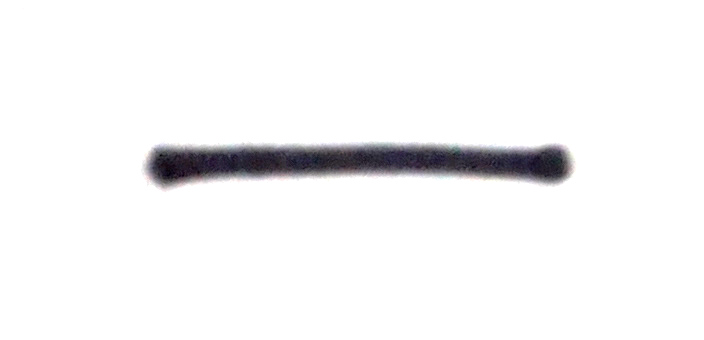
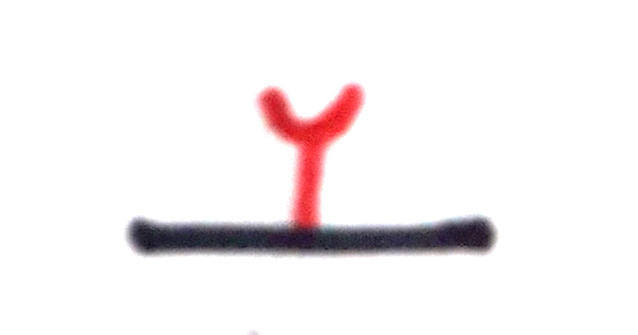
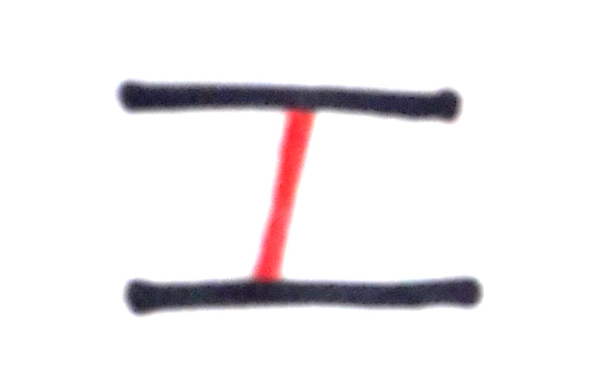
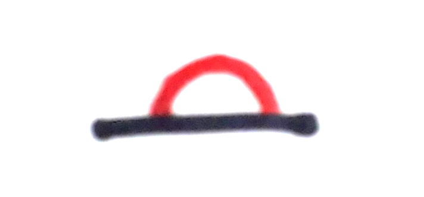
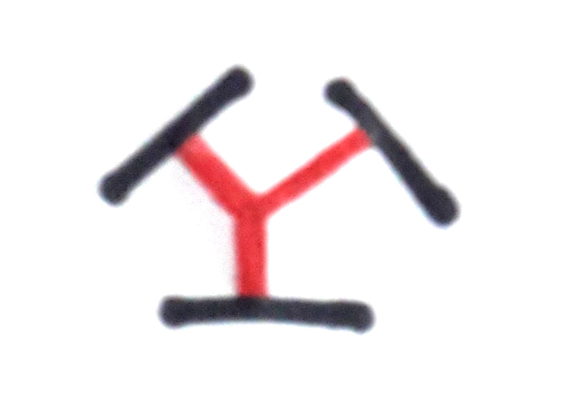
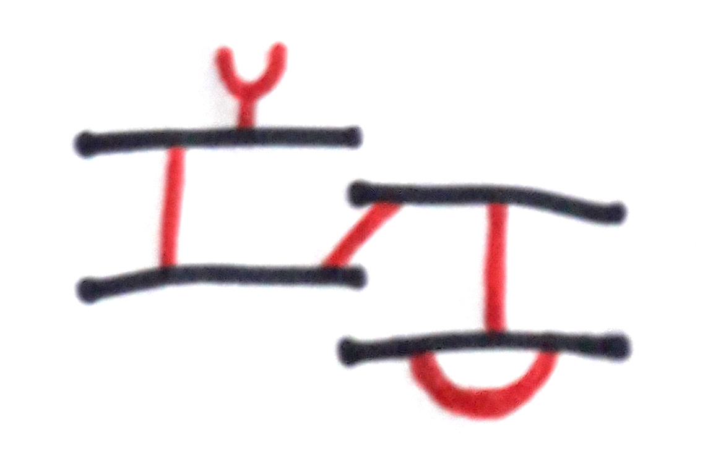
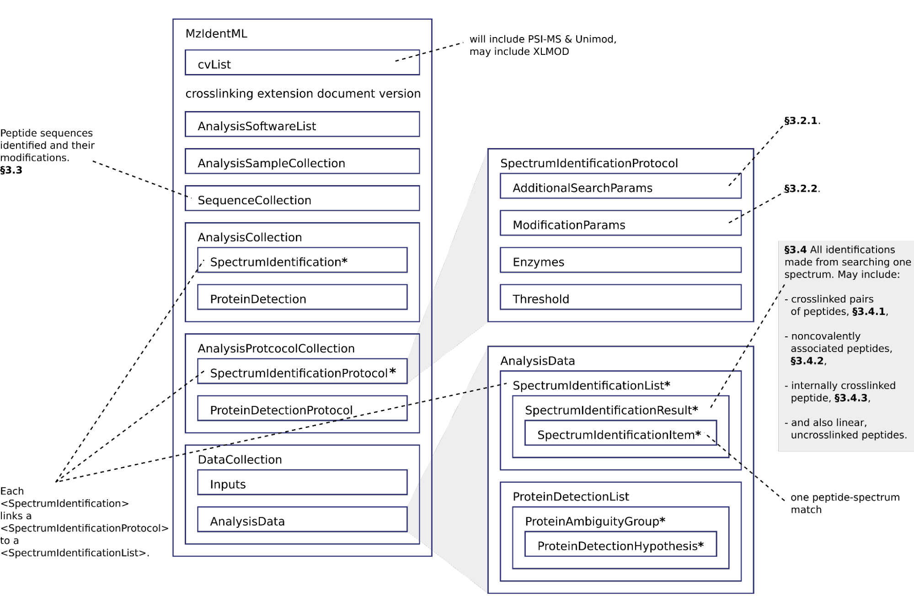
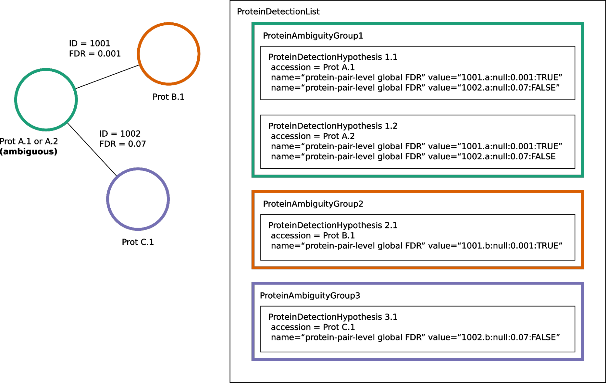

mzIdentML extension for crosslinking data June 24, 2024
PSI draft recommendation
PSI Proteomics Informatics Working Group
Status: FINAL
Colin W. Combe, University of Edinburgh
Lars Kolbowski, Technische Universität Berlin
Lutz Fischer, Technische Universität Berlin
Ville Koskinen, Matrix Science
Joshua Klein, University of Boston
Alexander Leitner, ETH Zurich
Juan Antonio Vizcaíno, European Bioinformatics Institute
Andrew R. Jones, University of Liverpool
Juri Rappsilber, University of Edinburgh & Technische Universität Berlin
June 24, 2024
mzIdentML: exchange format for peptides and proteins identified from mass spectra
Extension for crosslinking approaches
(This extension is an addendum to mzIdentML version 1.3.0)
Status of This Document
This document presents a final specification for the mzIdentML data format developed by the HUPO Proteomics Standards Initiative. Distribution is unlimited.
Version of This Document
The current version of this document is: version 1.0.0 final June 24, 2024.
Abstract
The Human Proteome Organisation (HUPO) Proteomics Standards Initiative (PSI) defines community standards for data representation in proteomics to facilitate data comparison, exchange and verification. This document defines the extension of the mzIdentML data standard to describe the outputs of proteomics search engines or similar software for the identification of crosslinked peptides.
Table of Contents
1. Introduction 2
1.1 Background 3
1.2. Supported Crosslinking Use Cases 3
1.3 Document Structure and Changes from mzIdentML Version 1.2.0 to 1.3.0 to Support Crosslinking Results 5
1.4 Availability of Documentation and Example Files 6
2. Controlled Vocabularies for Encoding Crosslinks 7
3. Encoding the Results of Crosslinking Searches 8
3.1. Introduction 8
3.2 <SpectrumIdentificationProtocol> Elements 10
3.2.1 Additional Search Parameters 10
3.2.2 Modification Parameters 11
3.3 Encoding Crosslinked Peptides in the Element <SequenceCollection> 15
3.4 Encoding Identified Crosslinks in <SpectrumIdentificationItem> Elements 19
3.4.1 Identifications of Crosslinked Peptides 19
3.4.2 Identifications of Noncovalently Associated Peptides 21
3.4.3 Identifications of an Internally Linked Peptide 23
4. Scores and Thresholds 24
4.1 Introduction 24
4.2 Thresholds 25
4.3 Scores 28
4.3.1 Match Level Scores 28
4.3.2 Peptide Level Scores 28
4.3.3 Interaction Level Scores (Unique Residue-Pairs and PPI) 31
4.4 FDR Specific Comments 38
5. Unsupported Use Cases and Future Directions 39
6. Appendix I. Comparison of rules for “crosslink donor” and “crosslink acceptor” depending on context 40
7. Appendix II. Example encodings of crosslinker reagents as <SearchModification> elements 42
7.1 Bis(sulfosuccinimidyl) suberate (BS3) 42
7.2 1-ethyl-3-(3-dimethylaminopropyl)carbodiimide hydrochloride (EDC) 43
7.3 (NHS-Diazirine) succinimidyl 4,4'-azipentanoate (SDA) 44
7.4 Disuccinimidyl sulfoxide (DSSO) 45
8. Authors Information 48
9. Glossary 48
10. References 50
11. Intellectual Property Statement 50
Copyright Notice 51
1. Introduction
1.1 Background
A large number of proteomics search engines are available, each outputting results in a variety of file formats. mzIdentML [1] is a HUPO-PSI endorsed community standard that provides a common file format for identification results. This extension document has been released in parallel with mzIdentML version 1.3. mzIdentML version 1.3 supports extensions for additional features or use cases which can be described in additional documents, rather than editing the original specification document.
This mzIdentML 1.3.0 extension document provides further information on the encoding of crosslinking Mass Spectrometry (MS) results in mzIdentML. It has two aims:
1- Extend the crosslinking use cases supported by mzIdentML version 1.2.0 (2017) to cover what is currently required by the state-of-the-art in the field. Particular attention is paid to workflows using cleavable crosslinkers.
2- Provide further clarification and documentation on how to encode crosslinking data in an mzIdentML file.
1.2. Supported Crosslinking Use Cases
Already supported use case in mzIdentML 1.2.0:
- Two crosslinked peptides (the crosslinking product that is typically of most interest).
New use cases supported in this extension (part of mzIdentML 1.3.0):
1- Reporting cleavable crosslinkers. MS-cleavable crosslinkers can cleave upon activation in the mass spectrometer, releasing the individual peptides and thus enabling their individual analysis. Section 7.11 of the main mzIdentML 1.3.0 specification gives a new mechanism for encoding identifications based on multiple spectra, using this is essential for some cleavable crosslinker workflows. Such a workflow is used as an example in Section 7.11 of the main specification document.
2- Internally linked peptides (commonly known as “looplinks”). Internally linked peptides are cases where both ends of the crosslinker are within a single peptide, not between two copies of the same peptide. This type of crosslinking product is therefore necessarily intramolecular.
3- Noncovalently associated peptides. Some spectra may show the fragmentation of two different peptides which were not crosslinked but stayed associated due to noncovalent interactions [2]. Both peptides together appear as a single precursor species in the instrument, as opposed to ‘chimeric’ spectra where a single peptide is selected as precursor but additional peptide(s) fall within the same selection window. Identifying these noncovalently associated peptides may improve the accuracy of the results as it can prevent them from being misidentified as crosslinked peptides.
4- Additionally, the encoding of scores applicable to crosslinking MS results, and their corresponding thresholds, has been clarified and improved.
An overview of the different crosslinking product types and their support in mzIdentML is given in Figure 1. For discussion of the product types that are not supported in this version of mzIdentML (crosslinkers with more than two reactive groups, higher order crosslinked peptides) see §5.
no crosslinker reaction |  linear peptide / free peptide |
|
non- covalently associated peptides |
|
|
crosslinker reaction |
|  crosslinker modified peptide (monolink or dead-end link) |  crosslinked peptides | 
cleavable crosslinker |  internally linked peptide (looplink) |
|  crosslinked peptides from crosslinkers with more than two reactive groups |  higher order crosslinked peptides |
|
mzIdentML version supporting |
1.1.0 |
1.2.0 |
1.3.0 |
Unsupported |
Figure 1. Summary of mzIdentML support for crosslinking product types.
1.3 Document Structure and Changes from mzIdentML Version 1.2.0 to 1.3.0 to Support Crosslinking Results
mzIdentML version 1.3.0 makes two significant changes: (i) a new mechanism for encoding identifications based on multiple spectra, including the retiral of the old method for doing this; (ii) the ability to supplement the specification with extension documents covering specific use cases. The general guidance on the mzIdentML file format given in the main specification document all applies here, with this extension document giving guidance on the use of the controlled vocabulary (CV) terms specific to crosslinking.
The previously supported crosslinking use case was described in the main mzIdentML 1.2.0 specification document. In mzIdentML 1.3.0 this information has been moved to this extension document but it remains unchanged. The only change to the previous version 1.2.0 support for crosslinking is regarding identifications based on multiple spectra, this change is covered in Section 7.11 of the main mzIdentML 1.3.0 specification document.
The new use cases supported in this extension (version 1.0.0, compatible with mzIdentML version 1.3.0) are explained in detail in the following Sections of this document (denoted with an §). All of them have new controlled vocabulary terms associated with them.
Section 3 of this extension document is organised on the basis of elements in the mzIdentML schema, see Figure 2. For each of the new use cases, the list below states the relevant sections of this document and the new CV terms.
1- Reporting cleavable crosslinkers. See §3.2.2. Three new CV terms have been created related to encoding the derivatives of cleavable crosslinkers:
- “cleavable crosslinker stub” (MS:1003346),
- “Unimod derivative code” (MS:1003347),
- “crosslinker cleavage characteristics” (MS:1003390).
2- Internally linked peptides (a.k.a. “looplinks”). See Sections §3.3 & §3.4.3. One new CV term has been created to allow the encoding:
- “looplink spectrum identification item” (MS:1003329).
3- Noncovalently associated peptides. See §3.2.1 and §3.4.2. Two new CV terms have been created related to noncovalently associated peptides:
- “noncovalently associated peptides search” (MS:1003330),
- “noncovalently associated peptides spectrum identification item” (MS:1003331).
4- Improvements in the encoding of scores and thresholds related to crosslinking results. See Section §4. Seven CV terms have been created:
- "crosslinked PSM-level global FDR" (MS:1003337),
- “peptide-pair sequence-level global FDR” (MS:1003338),
- “peptide-pair passes threshold” (MS:1003339),
- “residue-pair passes threshold” (MS:1003340),
- “protein-protein interaction passes threshold” (MS:1003341),
- “regular expression for whether interaction score derived from crosslinking passes threshold” (MS:1003342),
- “FDR applied separately to self crosslinks and protein heteromeric crosslinks” (MS:1003343),
- “residue pair ref” (MS:1003344).
- “regular expression for residue-pair ref” (MS:1003345)
1.4 Availability of Documentation and Example Files
All documents in their most recent form are available at the mzIdentML GitHub project (https://github.com/HUPO-PSI/mzIdentML/tree/master/specification_document).
The example files supporting this extension document are available at https://github.com/HUPO-PSI/mzIdentML/blob/master/examples/1_3examples/crosslinking/.
The example files are:
- Xlink_EDC_mzIdentML_1_3_0_draft.mzid (internally linked peptides),
- multiple_spectra_per_id_1_3_0_draft.mzid (identification based on multiple spectra),
- noncovalently_assoc_1_3_0_draft.mzid (noncovalently associated peptides),
- scores_and_thresholds_1_3_0_draft.mzid (scores and thresholds).
2. Controlled Vocabularies for Encoding Crosslinks
A collection of terms for describing a certain domain is called a controlled vocabulary (CV) [3]. Section 4.1 of the main mzIdentML 1.3.0 document describes the use of CVs in mzIdentML. The PSI-MS CV (https://github.com/HUPO-PSI/psi-ms-CV) can be used to encode many types of technical information in mzIdentML (e.g. statistical scores, mass spectrometers, etc). There are two other CVs that are relevant to encoding crosslinking data in mzIdentML: Unimod and XLMOD. XLMOD (https://raw.githubusercontent.com/HUPO-PSI/mzIdentML/master/cv/XLMOD.obo) represents the crosslinker reagents. Unimod (http://www.unimod.org/obo/unimod.obo) represents the resulting modifications in the crosslinked peptides/proteins.
At the time of writing (Unimod v2.1, XLMOD v1.1.12) both CVs have advantages and disadvantages when used for encoding crosslinking results in mzIdentML. For example, the representation of heterobifunctional crosslinkers (crosslinkers with different reactive groups) is better in XLMOD. However, the representation of the derivatives from a cleavable crosslinker is more complete in Unimod. Which CV (XLMOD or Unimod) to use for encoding crosslinker modifications is left as the implementers’ choice.
There is also some overlap between the information stored in these CVs and the contents of the <SearchModification> elements in mzIdentML. The <SearchModification> elements can encode: the derivatives of cleavable crosslinkers, namely the crosslinker stub as a peptide modification on the MS3 level and crosslinker cleavability as stub fragments on the MS2 level; and crosslinker specificity (including heterobifunctional crosslinkers). Implementers SHOULD describe the crosslinker modifications searched for as <SearchModification> elements; this provides a consistent way of retrieving crosslinker modification information regardless of which CV has been used, see §3.2.2.
3. Encoding the Results of Crosslinking Searches
3.1. Introduction
mzIdentML documents MUST indicate that they are implementing the guidance in this extension document by including the following CV term inside the top-level <MzIdentML> element, immediately after the <cvList> element:
<cvParam cvRef="PSI-MS" accession="MS:1003385" name="mzIdentML crosslinking extension document version"
value="1.0.0"/>
Crosslinked peptides presented a challenge for mzIdentML 1.2.0, since more than one peptide can be identified from the same spectrum.
mzIdentML 1.2.0 solved this by:
- introducing the “crosslink donor” (MS:1002509) and “crosslink acceptor” (MS:1002510) CV terms – the values of these terms associate either <SearchModification> elements (see §3.2.2) or <Modification> elements (see §3.3);
- introducing the “crosslink spectrum identification item” (MS:1002511) CV term – the values of these terms group <SpectrumIdentificationItem> elements within a <SpectrumIdentificationResult> (see §3.4).
Note that “crosslink donor” (MS:1002509) and “crosslink acceptor” (MS:1002510) are used in two different contexts:
- /MzIdentML/AnalysisProtocolCollection/SpectrumIdentificationProtocol/ ModificationParams/SearchModification – encoding the modifications searched for (including the specificity, see §3.2.2);
- /MzIdentML/SequenceCollection/Peptide/Modification - encoding the actual modifications present in the crosslinked peptides (§3.3).
The rules that govern their use differ in each context, the details of these rules are given in §3.2.2 & §3.3. To emphasise that they differ, Appendix I compares them. Appendix I presents no new information on how to encode crosslinking results in mzIdentML.
Figure 2 gives an overview of how the subsections here (§3) relate to the elements in an mzIdentML file.

Figure 2. Overview of the mzIdentML 1.3.0. Format (crosslinking extension). Elements are labelled with the section from this document that contains guidance on how to encode them.
3.2 <SpectrumIdentificationProtocol> Elements
A <SpectrumIdentificationProtocol> element describes the parameters and settings of a spectrum identification analysis. There may be several of these protocols included in one mzIdentML file. In the case of analysis workflows in which an identification is based on multiple spectra (see Section 7.11 of the main mzIdentML 1.3.0 specification document), these spectra identifications may be included in different <SpectrumIdentificationList> elements, each associated with a different <SpectrumIdentificationProtocol>.
Section 2 of the main mzIdentML 1.3.0 specification document states that “all search parameters should be described in sufficient detail to enable a user to run the same or a similar search on the same or another search engine”. As far as possible, the information that would be needed to reannotate the mass spectra SHOULD be included. The <FragmentTolerance> and <ParentTolerance> subelements of <SpectrumIdentificationProtocol> SHOULD be completed.
Two child elements of <SpectrumIdentificationProtocol> are covered in more detail here:
- <AdditionalSearchParams> (§3.2.1),
- <ModificationParams> (§3.2.2).
3.2.1 Additional Search Parameters
Path: /MzIdentML/AnalysisProtocolCollection/SpectrumIdentificationProtocol/AdditionalSearchParams
If a crosslinking search has been performed then the CV term “crosslinking search” (MS:1002494) MUST be present within the <AdditionalSearchParams> subelement of every <SpectrumIdentificationProtocol> associated with that search (see Figure 3).
The ion series that were searched for SHOULD also be included here.
New supported use case in this extension - noncovalently associated peptides: mzIdentML 1.2.1 introduces a new CV term – “noncovalently associated peptides search” (MS:1003330). If pairs of noncovalently associated peptides were also searched for, then the <SpectrumIdentificationProtocol> elements MUST also contain this new CV term within their <AdditionalSearchParams> subelement, see Figure 3.
The new CV term "FDR applied separately to self crosslinks and protein heteromeric crosslinks" (MS:1003343), see §4.4, which SHOULD be present is also shown in Figure 3.
<AnalysisProtocolCollection>
<SpectrumIdentificationProtocol analysisSoftware_ref="ID_software" id="SearchProtocol_1">
<SearchType>
<cvParam accession="MS:1001083" cvRef="PSI-MS" name="ms-ms search"/>
</SearchType>
<AdditionalSearchParams>
<cvParam accession="MS:1001211" cvRef="PSI-MS" name="parent mass type mono"/>
<cvParam accession="MS:1001256" cvRef="PSI-MS" name="fragment mass type mono"/>
<cvParam accession="MS:1002494" cvRef="PSI-MS" name="crosslinking search"/>
<cvParam accession="MS:1003330" cvRef="PSI-MS"
name="noncovalently associated peptides search"/>
<cvParam accession="MS:1003343" cvRef="PSI-MS"
name="FDR applied separately to self crosslinks and protein heteromeric crosslinks" value="true"/>
<cvParam cvRef="PSI-MS" accession="MS:1001118" name="param: b ion"/>
<cvParam cvRef="PSI-MS" accession="MS:1001262" name="param: y ion"/>
</AdditionalSearchParams>
...
</SpectrumIdentificationProtocol>
</AnalysisProtocolCollection>
Figure 3. XML snippet showing crosslinking related CV terms. If a crosslinking search has been performed, MS:1002494 MUST be present. If noncovalently associated peptides have also been searched for, then MS:1003330 MUST also be present. The new CV term "FDR applied separately to self crosslinks and protein heteromeric crosslinks" (MS:1003343) which SHOULD be present is also shown, see §4.4.
3.2.2 Modification Parameters
Path: /MzIdentML/AnalysisProtocolCollection/SpectrumIdentificationProtocol/ModificationParams/SearchModification
The <SpectrumIdentificationProtocol> element encodes the modifications that were searched for within its <ModificationParams> subelement. These are encoded in <SearchModification> elements within <ModificationParams>.
mzIdentML version 1.3.0 introduces two new CV terms to link <SearchModification> elements and <Modification> elements - “search modification id” (MS:1003392) which goes inside <SearchModification> elements, and “search modification id ref” (MS:1003393) which goes inside <Modification> elements. Making this link is optional but recommended where possible. In the case of open modification searches, such a link cannot be made. See Section 7.12 of the main mzIdentML specification document.
Each crosslinker reagent is defined by multiple <SearchModification> elements that contain either the “crosslink donor” (MS:1002509) or “crosslink acceptor” (MS:1002510) CV term. An example is given in Figure 4(i). The residue specificities of the crosslinkers used SHOULD be encoded here, examples are given in Appendix II.
The value slot of the crosslink donor and acceptor CV terms is interpreted as a local identifier for the <SearchModification> elements describing a single reagent. The rules governing the use of the crosslink donor and acceptor CV terms in <SearchModification> elements are given in Figure 4(ii).
There may be more than two <SearchModification> elements required. For example, if the crosslinker reacts with the sidechains and also with the protein termini, see Appendix II for examples.
<SearchModification> elements can contain one or more children of the CV term “peptide modification details” (MS:1001471). These CV terms can encode information on neutral losses, see Figure 4(i).
New supported use case in this extension - cleavable crosslinkers: mzIdentML 1.3.0 adds three new CV terms relating to modifications from cleavable crosslinkers – “cleavable crosslinker stub” (MS:1003346), “Unimod derivative code” (MS:1003347) and “crosslinker cleavage characteristics” (MS:1003390).
At the MS3 level, where single peptides and part of the cleaved crosslinker are identified, the crosslinker modifications SHOULD include the CV term “cleavable crosslinker stub” (MS:1003346).
The crosslink stub modification MUST also have a suitably sourced CV term for the reagent (see Appendix II). Additionally, if Unimod is being used as the CV, then the CV term “Unimod derivative code” (MS:1003347) MAY be used to state which derivative of the cleaved crosslinker is identified. The single-letter derivative codes in Unimod are chosen arbitrarily when a linker definition is added to Unimod. For instance, in https://unimod.org/xlink.html one can find the examples "A for alkene, S for sulfenic acid, and T for thiol", and e.g. Xlink:DSS uses W for loss of water. There is no formal vocabulary for the single-letter codes. "UNIMOD derivative code" must be equal to one of the derivative codes defined in the corresponding Unimod entry (not a random character unrelated to the definition). An example Unimod entry is at https://www.unimod.org/modifications_view.php?editid1=1842 .
At the MS2 level, the new CV term “crosslinker cleavage characteristics” (MS:1003390) signifies that the crosslinker is cleavable and on cleavage can leave a given stub. This can lead to additional stub fragments in the MS2 spectra that contain the crosslinker stub instead of the whole crosslinker plus the second peptide. Each “crosslinker cleavage characteristics” CV term represents one possible crosslinker stub. It has a structured value -
name:mass:pairs with
Name must be a single character to identify this stub. The scope of name is restricted to that crosslinker definition, i.e. they need only be unique within that crosslinker definition not the whole file or the <SpectrumIdentification> element. Mass gives the monoisotopic mass delta of the resulting stub in Daltons. Pairs with MUST be a sequence of one or more characters, giving the name(s) of the partner stub(s). See Appendix II for examples.
Note that the choice of which <SearchModification> is the donor and which one is the acceptor is arbitrary.
(i)
<SpectrumIdentificationProtocol>
...
<ModificationParams>
<SearchModification fixedMod="false" massDelta="138.06808" residues="S T Y K">
<cvParam cvRef="PSI-MS" accession="MS:1003392"
name="search modification id" value="BS3_donor"/>
<cvParam cvRef="XLMOD" accession="XLMOD:02000" name="BS3"/>
<cvParam cvRef="PSI-MS" accession="MS:1002509" name="crosslink donor"
value="0"/>
</SearchModification>
<SearchModification fixedMod="false" massDelta="138.06808" residues=".">
<SpecificityRules>
<cvParam cvRef="PSI-MS" accession="MS:1002057"
name="modification specificity protein N-term"/>
</SpecificityRules>
<cvParam cvRef="PSI-MS" accession="MS:1003392"
name="search modification id" value="BS3_donor_n_term"/>
<cvParam cvRef="XLMOD" accession="XLMOD:02000" name="BS3"/>
<cvParam cvRef="PSI-MS" accession="MS:1002510" name="crosslink donor"
value="0" />
</SearchModification>
<SearchModification fixedMod="false" massDelta="0.0" residues="S T Y K">
<cvParam cvRef="PSI-MS" accession="MS:1003392"
name="search modification id" value="BS3_acceptor"/>
<cvParam cvRef="XLMOD" accession="XLMOD:02000" name="BS3"/>
<cvParam cvRef="PSI-MS" accession="MS:1002510" name="crosslink acceptor"
value="0"/>
</SearchModification>
<SearchModification fixedMod="false" massDelta="0.0" residues=".">
<SpecificityRules>
<cvParam cvRef="PSI-MS" accession="MS:1002058"
name="modification specificity protein N-term"/>
</SpecificityRules>
<cvParam cvRef="PSI-MS" accession="MS:1003392"
name="search modification id" value="BS3_acceptor_n_term">
<cvParam cvRef="XLMOD" accession="XLMOD:02000" name="BS3"/>
<cvParam cvRef="PSI-MS" accession="MS:1002510" name="crosslink acceptor"
value="0" />
</SearchModification>
<SearchModification fixedMod="false" massDelta="15.994919" residues="M">
<cvParam cvRef="PSI-MS" accession="MS:1003392"
name="search modification id" value="Mox"/>
<cvParam accession="UNIMOD:35" name="Oxidation" cvRef="UNIMOD" />
<cvParam accession="MS:1001524" name="fragment neutral loss"
cvRef="PSI-MS" value="63.998291" unitAccession="UO:0000221" unitName="dalton" unitCvRef="UO"/>
</SearchModification>
</ModificationParams>
...
</SpectrumIdentificationProtocol>
(ii)
- At least two <SearchModification> elements SHOULD be used to encode each crosslink reagent, to encode the site specificity of both the donor and acceptor termini of the reagent.
- The value slot of the crosslink donor and acceptor CV terms is interpreted as a local identifier for the <SearchModification> elements describing a single reagent.
- The choice of which reactive group is the donor and which is the acceptor is arbitrary.
- The crosslink donor <SearchModification> element MUST have the attribute massDelta = the mass gain from the crosslink reagent.
- The crosslink acceptor peptide’s <SearchModification> element MUST have massDelta = 0.
- Both acceptor and donor MUST have a suitably sourced <cvParam>.
Figure 4. The use of the “crosslink donor” (MS:1002509) and “crosslink acceptor” (MS:1002510) CV terms in <SearchModification> elements.
(i) XML snippet showing the “crosslink donor” (MS:1002509) and “crosslink acceptor” (MS:1002510) CV terms used in <SearchModification>, shows encoding for the BS3 crosslinking reagent. It also shows a modification with a neutral loss.
(ii) The rules applying to the use of the “crosslink donor” (MS:1002509) and “crosslink acceptor” (MS:1002510) CV terms within <SearchModification>.
3.3 Encoding Crosslinked Peptides in the Element <SequenceCollection>
Path: /MzIdentML/SequenceCollection
The peptides that have been identified are encoded in the <SequenceCollection> element. This will include both crosslinked and uncrosslinked peptides.
A word of warning about redundancy, it is not the intention of mzIdentML that every <SpectrumIdentificationItem> (§3.4) references a new <Peptide> in <SequenceCollection> – “the combination of <Peptide> sequence and modifications MUST be unique in the file” (main mzIdentML specification document, Section 6.68). However, each distinct combination of crosslinked peptides will require a new pair of <Peptide> elements in <SequenceCollection>.
To represent the crosslinked peptides, mzIdentML 1.2.0 added a mechanism for linking two different <Peptide> elements together, using the CV terms “crosslink donor” (MS:1002509) and “crosslink acceptor” (MS:1002510). An identical value for these terms indicates that they are grouped together, see Figure 5(i).
The rules governing the use of the crosslink donor and acceptor CV terms in <Modification> elements are given in Figure 5(ii).
As of mzIdentML 1.3.0, <Modification> elements MAY contain the CV term "search modification id ref" (MS:1003393) to link a <Modification> to a <SearchModification> element. The value of this term is the unique id of the <SearchModification> as defined by its "search modification id" (MS:1003392) CV term. It is recommended to use this approach for the encoding of modifications from crosslinkers, see Appendix II.
New supported use case in this extension - internally linked peptide: An internally linked peptide has both ends of the crosslinker within it. To encode an internally crosslinked peptide the <Peptide> can contain one <Modification> element with the “crosslink donor” CV term and one <Modification> element with the “crosslink acceptor” CV term. The same rules apply to these CV terms when encoding internally linked peptides as when encoding crosslinked peptides (Figure 5 (ii)). For an example of how to encode an internally linked peptide, see Figure 5(iii).
The accompanying example file multiple_spectra_per_id_1.3.0_draft.mzid illustrates a common cleavable crosslinker workflow [4].
Child CV terms of “peptide modification details” (MS:1001471) can be included in <Modification> elements to provide additional information about the modification, including the new cleavable crosslinker related CV terms, see §3.2.2. This is not recommended if the <Modification> elements have "search modification id ref" (MS:1003393) CV terms to link them to a <SearchModification> element, as it would add unnecessary duplication to the file.
The encoding for crosslinked peptides MAY be combined with the encoding for modification localisation scoring, using the same mechanism (main mzIdentML 1.3.0 document, Section 5.2.8).
(i)
<SequenceCollection>
<Peptide id="30491856_30492180_2_4_p1">
<PeptideSequence>AAFTKQAADK</PeptideSequence>
<Modification monoisotopicMassDelta="138.0680796" location="5">
<cvParam cvRef="PSI-MS" accession="MS:1003393"
name="search modification id ref" value="DSS_donor"/>
<cvParam accession="XL:00002" cvRef="PSI-MS" name="Xlink:DSS"/>
<cvParam accession="MS:1002509" cvRef="PSI-MS" name="crosslink donor" value="5448"/>
</Modification>
</Peptide>
<Peptide id="30491856_30492180_2_4_p2">
<PeptideSequence>AMYPPKEDR</PeptideSequence>
<Modification monoisotopicMassDelta="0.0" location="6">
<cvParam cvRef="PSI-MS" accession="MS:1003393"
name="search modification id ref" value="DSS_acceptor"/>
<cvParam accession="MS:1002510" cvRef="PSI-MS" name="crosslink acceptor" value="5448"/>
</Modification>
</Peptide>
...
</SequenceCollection>
(ii) If a pair of crosslinked peptides has been identified:
- One peptide’s <Modification> element MUST be flagged as “crosslink donor” and one MUST be flagged as “crosslink acceptor”.
- A unique identifier linking exactly two <Modification> elements together MUST be in the value slot. (Thereby excluding the representation of trimeric crosslinkers, see §6.)
- If the CV term “search modification id ref” (MS:1003393) is being used then the crosslink donor MUST be chosen to match the end marked as the donor in the corresponding <SearchModification> elements, see §3.2.2. If that CV term is not used, or if the preceding rule does not unambiguously define which end to mark as donor (e.g. because the crosslinker is symmetrical) then the export software SHOULD use the following rules to choose the crosslink donor as the: longer peptide, then higher peptide neutral mass, then alphabetical order.
- The crosslink donor <Modification> element MUST have the attribute monoisotopicMassDelta = the mass gain from the crosslink reagent.
- The crosslink acceptor peptide’s <Modification> element MUST have monoisotopicMassDelta = 0.
- The crosslink donor peptide’s <Modification> element MUST have a suitably sourced cvParam for the crosslink. The crosslink acceptor peptide’s <Modification> element MUST NOT have a cvParam for the reagent.
(iii)
<SequenceCollection>
<Peptide id="peptide_7_1">
<PeptideSequence>DVIQSLVDDDLVAK</PeptideSequence>
<Modification location="10" residues="D" monoisotopicMassDelta="-18.010565">
<cvParam cvRef="PSI-MS" accession="MS:1003393"
name="search modification id ref" value="EDC_donor"/>
<cvParam accession="UNIMOD:2018" name="Xlink:EDC" cvRef="UNIMOD"/>
<cvParam accession="MS:1002509" cvRef="PSI-MS" name="crosslink donor"
value="100"/>
</Modification>
<Modification location="14" residues="K" monoisotopicMassDelta="0.0">
<cvParam cvRef="PSI-MS" accession="MS:1003393"
name="search modification id ref" value="EDC_acceptor"/>
<cvParam accession="MS:1002510" cvRef="PSI-MS" name="crosslink acceptor"
value="100"/>
</Modification>
</Peptide>
...
</SequenceCollection>
Figure 5. Encoding Crosslinked Peptides in the Element <SequenceCollection>
(i) XML snippet showing the encoding of crosslinked peptides.
(ii) The rules applying to the use of the “crosslink donor” (MS:1002509) and “crosslink acceptor” (MS:1002510) CV terms within <Modification> elements.
(iii) XML snippet showing the encoding of an internally linked peptide.
<SequenceCollection>
<!-- linear peptides-->
<Peptide id="p1_linear">
<PeptideSequence>PEPKR</PeptideSequence>
<Modification location="4" monoisotopicMassDelta="176.01433">
<cvParam cvRef="PSI-MS" accession="MS:1003393"
name="search modification id ref" value="DSSO_monolink_W"/>
<cvParam accession="UNIMOD:1842" cvRef="UNIMOD" name="Xlink:DSSO"/>
<cvParam accession="MS:1003347" name="UNIMOD derivative code" value="W" cvRef="PSI-MS" />
</Modification>
</Peptide>
<!-- crosslinked peptides -->
<Peptide id="p1">
<PeptideSequence>PEPKR</PeptideSequence>
<Modification location="4" monoisotopicMassDelta="158.003765">
<cvParam cvRef="PSI-MS" accession="MS:1003393"
name="search modification id ref" value="DSSO_donor"/>
<cvParam accession="UNIMOD:1842" cvRef="UNIMOD" name="Xlink:DSSO"/>
<cvParam cvRef="PSI-MS" accession="MS:1002509" name="crosslink donor" value="1"/>
</Modification>
</Peptide>
<Peptide id="p2">
<PeptideSequence>TIDYK</PeptideSequence>
<Modification location="4" monoisotopicMassDelta="0">
<cvParam cvRef="PSI-MS" accession="MS:1003393"
name="search modification id ref" value="DSSO_acceptor"/>
<cvParam cvRef="PSI-MS" accession="MS:1002510" name="crosslink acceptor" value="1"/>
</Modification>
</Peptide>
<!-- MS3 peptides are separately listed, as they are linear stub modified peptides -->
<Peptide id="p1_a">
<PeptideSequence>PEPKR</PeptideSequence>
<Modification location="4" monoisotopicMassDelta="54.010565">
<cvParam cvRef="PSI-MS" accession="MS:1003393"
name="search modification id ref" value="DSSO_crosslink_stub_a"/>
<cvParam accession="UNIMOD:1842" cvRef="UNIMOD" name="Xlink:DSSO"/>
<cvParam accession="MS:1003347" name="UNIMOD derivative code" value="A" cvRef="PSI-MS" />
<cvParam cvRef="PSI-MS" accession="MS:1003346" name="cleavable crosslinker stub"/>
</Modification>
</Peptide>
<Peptide id="p1_t">
<PeptideSequence>PEPKR</PeptideSequence>
<Modification location="4" monoisotopicMassDelta="85.982635">
<cvParam cvRef="PSI-MS" accession="MS:1003393"
name="search modification id ref" value="DSSO_crosslink_stub_t"/>
<cvParam accession="UNIMOD:1842" cvRef="UNIMOD" name="Xlink:DSSO"/>
<cvParam accession="MS:1003347" name="UNIMOD derivative code" value="T" cvRef="PSI-MS" />
<cvParam cvRef="PSI-MS" accession="MS:1003346" name="cleavable crosslinker stub"/>
</Modification>
</Peptide>
<Peptide id="p2_a">
<PeptideSequence>TIDYK</PeptideSequence>
<Modification location="4" monoisotopicMassDelta="54.010565">
<cvParam cvRef="PSI-MS" accession="MS:1003393"
name="search modification id ref" value="DSSO_crosslink_stub_a"/>
<cvParam accession="UNIMOD:1842" cvRef="UNIMOD" name="Xlink:DSSO"/>
<cvParam accession="MS:1003347" name="UNIMOD derivative code" value="A" cvRef="PSI-MS" />
<cvParam cvRef="PSI-MS" accession="MS:1003346" name="cleavable crosslinker stub"/>
</Modification>
</Peptide>
<Peptide id="p2_t">
<PeptideSequence>TIDYK</PeptideSequence>
<Modification location="4" monoisotopicMassDelta="85.982635">
<cvParam cvRef="PSI-MS" accession="MS:1003393"
name="search modification id ref" value="DSSO_crosslink_stub_t"/>
<cvParam accession="UNIMOD:1842" cvRef="UNIMOD" name="Xlink:DSSO"/>
<cvParam accession="MS:1003347" name="UNIMOD derivative code" value="T" cvRef="PSI-MS" />
<cvParam cvRef="PSI-MS" accession="MS:1003346" name="cleavable crosslinker stub"/>
</Modification>
</Peptide>
Figure 6. XML snippet showing the encoding of modifications from cleavable crosslinkers. The new CV terms are shown: “crosslinker stub” (MS:1003346) and “Unimod derivative code” (MS:1003347). This example also uses the new CV term "search modification id ref" (MS:1003393) to reference the corresponding <SearchModification> elements.
3.4 Encoding Identified Crosslinks in <SpectrumIdentificationItem> Elements
3.4.1 Identifications of Crosslinked Peptides
Path: /MzIdentML/DataCollection/AnalysisData/SpectrumIdentificationList/SpectrumIdentificationResult
<SpectrumIdentificationResult> elements report the evidence associated with the identification of particular peptides.
A pair of crosslinked peptides within a given <SpectrumIdentificationResult> MUST be reported as two instances of <SpectrumIdentificationItem> having a shared local unique identifier as the value for the CV term “crosslink spectrum identification item” (MS:1002511). Locally unique means unique within the containing <SpectrumIdentificationResult>. See Figure 7(i). The rules governing the use of the “crosslink spectrum identification item” CV term are given in Figure 7(ii).
(i)
<SpectrumIdentificationResult spectraData_ref="SID_1" spectrumID="index=2776" id="SIR_1">
<SpectrumIdentificationItem passThreshold="true" rank="1"
peptide_ref="30491856_30492180_2_4_p1" experimentalMassToCharge= "569.7912"
calculatedMassToCharge="569.79054" chargeState="4" id="SII_1_1">
<PeptideEvidenceRef peptideEvidence_ref="pepevid_psm121558473_pep30491845_protP02768-A_target_535"/>
<cvParam accession="MS:1002511" cvRef="PSI-MS" value="1"
name="crosslink spectrum identification item"/>
<cvParam accession="MS:1002545" cvRef="PSI-MS"
value="1.3111826921077734" name="xi:score"/>
<cvParam accession="MS:1003344" cvRef="PSI-MS" value="54321.a" name="Residue pair ref"/>
</SpectrumIdentificationItem>
<SpectrumIdentificationItem passThreshold="true" rank="1"
peptide_ref="30491715_30491845_3_7_p0" experimentalMassToCharge= "569.7912"
calculatedMassToCharge="569.79054" chargeState="4" id="SII_1_2">
<PeptideEvidenceRef
peptideEvidence_ref="pepevid_psm121558473_pep30491715_protP02768-A_target_411"/>
<cvParam accession="MS:1002511" cvRef="PSI-MS" value="1"
name="crosslink spectrum identification item"/>
<cvParam accession="MS:1002545" cvRef="PSI-MS"
value="1.3111826921077734" name="xi:score"/>
<cvParam accession="MS:1003344" cvRef="PSI-MS" value="54321.b" name="Residue pair ref"/>
</SpectrumIdentificationItem>
</SpectrumIdentificationResult>
(ii) If a crosslinked pair of peptides has been identified:
- There MUST be two <SpectrumIdentificationItem> elements with the same rank value.
- Both MUST have the “crosslink spectrum identification item” cvParam, and the value acts as a local identifier within the <SpectrumIdentificationResult> to group these two elements together.
- The experimentalMassToCharge, calculatedMassToCharge and chargeState MUST be identical over both SII elements, indicating the overall values for the pair.
- If the search engine applies a score to the paired identification, both <SpectrumIdentificationItem> elements MUST have the same cvParam capturing the value.
- The two <SpectrumIdentificationItem> elements MAY also have independent scores for the two chains (not shown).
Figure 7. Encoding the identification of a pair of crosslinked peptides. (i) Example XML snippet. (ii) The rules governing the use of “crosslink spectrum identification item”.
3.4.2 Identifications of Noncovalently Associated Peptides
Path: /MzIdentML/DataCollection/AnalysisData/SpectrumIdentificationList/SpectrumIdentificationResult
New supported use case in this extension - noncovalently associated peptides: mzIdentML 1.2.1 introduces a new CV term “noncovalently associated peptides spectrum identification item” (MS:1003331) to encode such identifications (see §1.2). It operates in the same way as “crosslink spectrum identification item”, by using the value of the CV term to group the identifications together, see Figure 8(i).
As indicated above, to use the “noncovalently associated peptides spectrum identification item” (MS:1003331), the element <AdditionalSearchParams> MUST contain the CV term “noncovalently associated peptides search” (MS:1003330), see Figure 3.
The rules governing the use of the “noncovalently associated peptides spectrum identification item” CV term are given in Figure 8 (ii) and are analogous to those governing the use of “crosslink spectrum identification item”. The peptides referred to will be linear, uncrosslinked peptides.
(i)
<SpectrumIdentificationResult spectraData_ref="SID_1" spectrumID="index=2776" id="SIR_1">
<SpectrumIdentificationItem passThreshold="true" rank="1"
peptide_ref=p1" experimentalMassToCharge= "569.7912"
calculatedMassToCharge="569.79054" chargeState="4" id="SII_1_1">
<PeptideEvidenceRef peptideEvidence_ref="pepevid_pep_1"/>
<cvParam accession="MS:1003331" cvRef="PSI-MS" value="1"
name="noncovalently associated peptides spectrum identification item"/>
<cvParam accession="MS:1002545" cvRef="PSI-MS"
value="1.3111826921077734" name="xi:score"/>
</SpectrumIdentificationItem>
<SpectrumIdentificationItem passThreshold="true" rank="1"
peptide_ref="p2" experimentalMassToCharge= "569.7912"
calculatedMassToCharge="569.79054" chargeState="4" id="SII_1_2">
<PeptideEvidenceRef peptideEvidence_ref="pepevid_pep_2"/>
<cvParam accession="MS:1003331" cvRef="PSI-MS" value="1"
name="noncovalently associated peptides spectrum identification item"/>
<cvParam accession="MS:1002545" cvRef="PSI-MS"
value="1.3111826921077734" name="xi:score"/>
</SpectrumIdentificationItem>
</SpectrumIdentificationResult>
(ii) If a pair of noncovalently associated peptides has been identified:
- There MUST be two <SpectrumIdentificationItem> elements with the same rank value.
- Both MUST have the “noncovalently associated peptides spectrum identification item” cvParam, and the value acts as a local identifier within the <SpectrumIdentificationResult> to group these two elements together.
- The experimentalMassToCharge, calculatedMassToCharge and chargeState MUST be identical over both SII elements, indicating the overall values for the pair.
- If the search engine applies a score to the paired identification, both <SpectrumIdentificationItem> elements MUST have the same cvParam capturing the value.
- The two <SpectrumIdentificationItem> elements MAY also have independent scores for the two chains (not shown).
Figure 8. Encoding the identification of a pair of noncovalently associated peptides. (i) Example XML snippet. (ii) The rules governing the use of “noncovalently associated peptides spectrum identification item”.
3.4.3 Identifications of an Internally Linked Peptide
Path: /MzIdentML/DataCollection/AnalysisData/SpectrumIdentificationList/SpectrumIdentificationResult
New supported use case in this extension - internally linked peptide: mzIdentML 1.3.0 introduces a new CV term – “looplink spectrum identification item” (MS:1003329) – to allow the encoding of internally linked peptides (a.k.a. “looplinks”), see Figure 9. The <SpectrumIdentificationItem> element will refer to a <Peptide> containing both crosslink donor and crosslink acceptor modifications (as shown in Figure 5(iii)).
<SpectrumIdentificationResult spectraData_ref="SID_1" spectrumID="index=2776" id="SIR_1">
<SpectrumIdentificationItem passThreshold="true" rank="1"
peptide_ref="looplink_p1" experimentalMassToCharge= "569.7912"
calculatedMassToCharge="569.79054" chargeState="4" id="SII_1_1">
<PeptideEvidenceRef peptideEvidence_ref="looplink_p1_pep_evid"/>
<cvParam accession="MS:1003329" cvRef="PSI-MS"
name="looplink spectrum identification item"/>
<cvParam accession="MS:1002545" cvRef="PSI-MS"
value="1.3111826921077734" name="xi:score"/>
</SpectrumIdentificationItem>
</SpectrumIdentificationResult>
Figure 9. XML snippet including the encoding of an identification of an internally linked peptide. Within a <SpectrumIdentificationResult>, a <SpectrumIdentificationItem> element may be marked as referring to a looplink containing peptide by including the CV term “looplink spectrum identification item” (MS:1003329) CV term. This <SpectrumIdentificationItem> will refer to a <Peptide> containing both crosslink donor and crosslink acceptor modifications (as shown in Figure 5(iii)).
4. Scores and Thresholds
4.1 Introduction
This section addresses the encoding of error control procedures. This consists of encoding scores (§4.3) and the corresponding thresholds (§4.2) applied to those scores. The contents of this section are all optional; at the PSM level, providing threshold information and identifications that fall below the given significance threshold is encouraged.
“Depending on the intended purpose of the file, the file producer MAY wish to report a number of identifications that fall below the given significance threshold, for example to allow global statistical analyses to be performed which are not possible if only identifications passing the threshold are reported.” (Section 7.4 of the main mzIdentML 1.3.0 specification document)
mzIdentML also provides the option not to encode the peptide spectrum matches that fell below the threshold applied. (§4.2)
The correspondence between scores and the applied thresholds is indicated by using the same CV term for both. That is, the same CV term will be used within the <Threshold> element and within either the related <SpectrumIdentificationItem> element or the related <ProteinDetectionHypothesis> element.
One specific type of score is an FDR (False Discovery Rate) score. Comments specific to FDR are in §4.4.
There are different points in the analysis at which thresholds may be applied [5] [6]. These correspond to different levels of consolidation at which analyses may be performed. Scores and thresholds are encoded differently in mzIdentML depending on the level of consolidation at which they were applied. For crosslinking studies encoded in mzIdentML, the possible levels are:
- crosslink containing PSM (also known as Crosslink Spectrum Match, CSM), see §4.3.1,
- unique peptide-pair, see §4.3.2,
- unique residue-pair, see §4.3.3,
- protein-protein interaction (PPI) see §4.3.3.
Unique residue-pair and protein-protein interaction level scores are described in the same section as they are encoded using the same mechanism.
The example file scores_and_thresholds_1_3_0_draft.mzid gives a simplified example containing two crosslinks and shows scores and thresholds applied at all four levels. Figures 10, 11, 14 and 15 are XML-snippets from that example file.
mzIdentML allows peptide-level scores to be associated with “unique peptides” (not arbitrary groups of peptides). There are three mutually exclusive definitions of “unique peptide”:
- “group PSMs by sequence” (MS:1002496);
- “group PSMs by sequence with modifications” (MS:1002497);
- “group PSMs by sequence with modifications and charge” (MS:1002498).
If peptide level (re)scoring is used, exactly one of these CV terms must be placed in the <AdditionalSearchParams> element to state the definition of “unique peptide” in use (see Section 5.2.7 of the main specification document). As these are mutually exclusive, an error control procedure which uses more than one definition of “unique peptide” cannot be fully captured by mzIdentML.
4.2 Thresholds
Section 7.4 of the main mzIdentML specification document gives general guidance on the encoding of thresholds and what has passed them. Note that thresholds are encoded in two different places: in the <SpectrumIdentificationProtocol> element and in the <ProteinDetectionProtocol> element. In both cases, they are encoded using CV terms inside a <Threshold> element, see Figure 10.
The <Threshold> element inside <SpectrumIdentificationProtocol> gives the thresholds associated with <SpectrumIdentificationItem> elements. These thresholds apply at the crosslinked PSM level and at a unique peptide level.
Analogously, the <Threshold> element inside <ProteinDetectionProtocol> includes the thresholds associated with <ProteinDetectionHypothesis> elements. These thresholds apply at the unique residue-pair level and PPI level.
The elements <SpectrumIdentificationItem> and <ProteinDetectionHypothesis> have a mandatory Boolean attribute passThreshold that allows a file producer to indicate that an identification has passed the given thresholds or that it has been manually validated.
The passThreshold attribute of <SpectrumIdentificationItem> relates only to the passing of PSM-level thresholds (see Section 5.2.7 of the main specification document, final paragraph therein).
To enable additional thresholding at the peptide-pair level in the context of crosslinking, a new CV term is required for all PSMs (“peptide-pair passes threshold”, MS:1003339) as shown in Figure 11. This is similar to the general guidance on peptide level thresholds given in Section 5.2.7 of the main specification document.
The passThreshold attribute of <ProteinDetectionHypothesis> only relates to the presence or absence of proteins, it is not directly related to the identification of crosslinks. Whether or not residue-pairs or PPIs have passed significance thresholds is encoded by including the new CV terms “residue-pair passes threshold” (MS:1003340) or “protein-protein interaction passes threshold” (MS:1003341) in the <ProteinDetectionHypothesis> element. The values of these CV terms include an identifier that associates them with a specific residue pair or PPI, see Figure 14.
At each level of consolidation there may be multiple scores. Therefore, for each level there is a mechanism for encoding whether the identification passed when all scores are considered:
- for PSM-level identifications this is the passThreshold attribute of <SpectrumIdentificiationItem>;
- at peptide-pair level it is the “peptide-pair passes threshold” (MS:1003339) CV term;
- at residue-pair level it is the “residue-pair passes threshold” (MS:1003340) CV term;
- and for PPIs it is the “protein-pair passes threshold” (MS:1003341) CV term.
If the file producer does not want to indicate that thresholds have been set, all identification elements (<SpectrumIdentificationItem> and <ProteinDetectionHypothesis>) MUST have the attribute passThreshold = “true" and the “no threshold" CV term should be provided within the <SpectrumIdentificationProtocol> and <ProteinDetectionProtocol> (Section 7.4 of the main mzIdentML 1.3.0 specification document). In this case, the new “residue-pair passes threshold" (MS:1003340) and “protein-protein interaction passes threshold" (MS:1003341) CV terms can be omitted.
<AnalysisProtocolCollection >
<SpectrumIdentificationProtocol analysisSoftware_ref="xiFDR_id" id="SearchProtocol_1_17022">
<SearchType>
<cvParam cvRef="PSI-MS" accession="MS:1001083" name="ms-ms search"/>
</SearchType>
<AdditionalSearchParams>
<cvParam cvRef="PSI-MS" accession="MS:1001211" name="parent mass type mono"/>
<cvParam cvRef="PSI-MS" accession="MS:1002494" name="crosslinking search"/>
<cvParam cvRef="PSI-MS" accession="MS:1001256" name="fragment mass type mono"/>
<cvParam cvRef="PSI-MS" accession="MS:1002490" name="peptide-level scoring"/>
<cvParam cvRef="PSI-MS" accession = "MS:1002496" name="group PSMs by sequence"/>
<cvParam cvRef="PSI-MS" accession="MS:1003343"
name="FDR applied separately to self crosslinks
and protein heteromeric crosslinks" />
<cvParam accession="MS:1001118" name="param: b ion" cvRef="PSI-MS" />
<cvParam accession="MS:1001262" name="param: y ion" cvRef="PSI-MS" />
</AdditionalSearchParams>
<ModificationParams .../>
<Enzymes .../>
<FragmentTolerance .../>
<ParentTolerance .../>
<Threshold>
<cvParam cvRef="PSI-MS" accession="MS:1003337"
name="crosslinked PSM-level global FDR" value="0.05"/>
<cvParam cvRef="PSI-MS" accession="MS:1003338"
name="peptide-pair sequence-level global FDR" value="0.05"/>
</Threshold>
</SpectrumIdentificationProtocol>
<ProteinDetectionProtocol analysisSoftware_ref="xiFDR_id" id="pdp1">
<Threshold>
<cvParam cvRef="PSI-MS" accession="MS:1002677"
name="residue-pair-level global FDR" value="0.05"/>
<cvParam cvRef="PSI-MS" accession="MS:1002676"
name="protein-pair-level global FDR" value="0.05"/>
</Threshold>
</ProteinDetectionProtocol>
</AnalysisProtocolCollection>
Figure 10. XML snippet showing the thresholds applied at all four levels of consolidation. These are - PSM, peptide-pair, residue pair and PPI. The CV terms MS:1002490 and MS:1002496 are required to enable peptide level rescoring (mzIdentML main specification Section 5.2.7) and to state the definition of ‘unique peptide’ being used.
4.3 Scores
4.3.1 Match Level Scores
Match level scores are stored in <SpectrumIdentificationItem> elements.
The CV mapping rules for <SpectrumIdentificationItem> are straightforward – there is only one, which states ‘MAY supply a child term of MS:1001405 (spectrum identification result details) one or more times’.
CV terms to encode match level scores must therefore be children of MS:1001405 in the CV’s “is a” hierarchy.
Those which also meet the CV mapping rules for the <Threshold> element can also be used to encode the Threshold applied.
See Section 7.11 of the main mzIdentML document for guidance specific to PSM-level scores for identifications based on multiple spectra.
4.3.2 Peptide Level Scores
Peptide level scores are also stored in <SpectrumIdentificationItem> elements and everything in §4.3.1 also applies here.
Section 5.2.7 of the main mzIdentML specification document describes the encoding of peptide-level scores and statistical measures. The encoding of crosslinking results MAY also be combined with the peptide-level re-scoring mechanism described there, but with specific CV terms for scores associated with crosslinked peptides rather than PSM-level terms (as stated in Section 5.2.7 of main specification document).
Where needed, new CV terms for search specific scores of crosslinked peptides should be added as a child of (i.e. with an “is a” relationship to) the CV term “interaction score derived from crosslinking” (MS:1002664).
<SpectrumIdentificationList id="SII_LIST_1_1" >
<SpectrumIdentificationResult spectrumID="index=26630" spectraData_ref="SD_17022_recal_B210619_02_Lumos_ZC_CO_190_D2I_SDA-WT1.mgf" id="SIR_1">
<SpectrumIdentificationItem chargeState="5" experimentalMassToCharge="1135.3259479607323"
calculatedMassToCharge="1135.3254335427703"
peptide_ref="16734061838_ISDKRAPSQGGLENEGVFEELLR_16734063165_GAEDEEEEEDVGFEQNFEEMLESVTR_4_9_p1" rank="1"
passThreshold="false" id="SII_1_1">
<PeptideEvidenceRef peptideEvidence_ref="pepevid_pep_16734063165"/>
<cvParam cvRef="PSI-MS" accession="MS:1002511" name="crosslink spectrum identification item" value="1"/>
<cvParam cvRef="PSI-MS" accession="MS:1002545" name="xi:score" value="25.929927957127177"/>
<!-- crosslinked PSM level global FDR -->
<cvParam cvRef="PSI-MS" accession="MS:1003337 name="crosslinked PSM-level global FDR" value="0.06"/>
<!-- peptide pair global FDR -->
<cvParam cvRef="PSI-MS" accession="MS:1002520" value="GAEDEEEEEDVGFEQNFEEMLESVTR-ISDKRAPSQGGLENEGVFEELLR"
name="peptide group ID"/>
<cvParam cvRef="PSI-MS" accession="MS:1003338" name="peptide-pair sequence-level global FDR" value="0.06"/>
<cvParam cvRef="PSI-MS" accession="MS:1003339" name="peptide-pair passes threshold" value="false"/>
<!-- residue pair ref value="1.b" -->
<cvParam cvRef="PSI-MS" accession="MS:1003344" value="11.b" name="Residue-pair ref"/>
</SpectrumIdentificationItem>
<SpectrumIdentificationItem chargeState="5" experimentalMassToCharge="1135.3259479607323"
calculatedMassToCharge="1135.3254335427703"
peptide_ref="16734061838_ISDKRAPSQGGLENEGVFEELLR_16734063165_GAEDEEEEEDVGFEQNFEEMLESVTR_4_9_p0" rank="1"
passThreshold="false" id="SII_1_2">
<PeptideEvidenceRef peptideEvidence_ref="pepevid_pep_16734061838"/>
<cvParam cvRef="PSI-MS" accession="MS:1002511" name="crosslink spectrum identification item" value="1"/>
<cvParam cvRef="PSI-MS" accession="MS:1002545" name="xi:score" value="25.929927957127177"/>
<!-- crosslinked PSM level global FDR -->
<cvParam cvRef="PSI-MS" accession="MS:1003337" name="crosslinked PSM-level global FDR" value="0.06"/>
<!-- peptide pair global FDR -->
<cvParam cvRef="PSI-MS" accession="MS:1002520" value="GAEDEEEEEDVGFEQNFEEMLESVTR-ISDKRAPSQGGLENEGVFEELLR"
name="peptide group ID"/>
<cvParam cvRef="PSI-MS" accession="MS:1003338" name="peptide-pair sequence-level global FDR" value="0.06"/>
<cvParam cvRef="PSI-MS" accession="MS:1003339" name="peptide-pair passes threshold" value="false"/>
<!-- residue pair ref value="11.a" -->
<cvParam cvRef="PSI-MS" accession="MS:1003344" value="11.a" name="Residue-pair ref"/>
</SpectrumIdentificationItem>
<cvParam cvRef="PSI-MS" accession="MS:1000797" name="peak list scans" value="40560"/>
</SpectrumIdentificationResult>
<SpectrumIdentificationResult spectrumID="index=23414" spectraData_ref="SD_17022_recal_B210619_04_Lumos_ZC_CO_190_D2I_SDA-WT3.mgf" id="SIR_2">
<SpectrumIdentificationItem chargeState="6" experimentalMassToCharge="752.7466713415814"
calculatedMassToCharge="752.41371619677"
peptide_ref="16734068348_TAAPTVCcmLLVLGQADKVLEEVDWLIKR_16734057553_SCcmKDLQILQASK_18_1_p1" rank="1"
passThreshold="true" id="SII_2_1">
<PeptideEvidenceRef peptideEvidence_ref="pepevid_pep_16734057553"/>
<cvParam cvRef="PSI-MS" accession="MS:1002511" name="crosslink spectrum identification item" value="2"/>
<cvParam cvRef="PSI-MS" accession="MS:1002545" name="xi:score" value="21.55734182309742"/>
<!-- crosslinked PSM level global FDR -->
<cvParam cvRef="PSI-MS" accession="MS:1003337" name="crosslinked PSM-level global FDR" value="0.03"/>
<!-- peptide pair global FDR -->
<cvParam cvRef="PSI-MS" accession="MS:1002520" value="SCKDLQILQASK-TAAPTVCLLVLGQADKVLEEVDWLIKR" name="peptide group ID"/>
<cvParam cvRef="PSI-MS" accession="MS:1003338" name="peptide-pair sequence-level global FDR" value="0.03"/>
<cvParam cvRef="PSI-MS" accession="MS:1003339" name="peptide-pair passes threshold" value="true"/>
<!-- residue pair ref value="22.b" -->
<cvParam cvRef="PSI-MS" accession="MS:1003344" value="22.b" name="Residue-pair ref"/>
</SpectrumIdentificationItem>
<SpectrumIdentificationItem chargeState="6" experimentalMassToCharge="752.7466713415814"
calculatedMassToCharge="752.41371619677"
peptide_ref="16734068348_TAAPTVCcmLLVLGQADKVLEEVDWLIKR_16734057553_SCcmKDLQILQASK_18_1_p0" rank="1"
passThreshold="true" id="SII_2_2">
<PeptideEvidenceRef peptideEvidence_ref="pepevid_pep_16734068348"/>
<cvParam cvRef="PSI-MS" accession="MS:1002511" name="crosslink spectrum identification item" value="2"/>
<cvParam cvRef="PSI-MS" accession="MS:1002545" name="xi:score" value="21.55734182309742"/>
<!-- crosslinked PSM level global FDR -->
<cvParam cvRef="PSI-MS" accession="MS:1003337" name="crosslinked PSM-level global FDR" value="0.03"/>
<!-- peptide pair global FDR -->
<cvParam cvRef="PSI-MS" accession="MS:1002520" value="SCKDLQILQASK-TAAPTVCLLVLGQADKVLEEVDWLIKR" name="peptide group ID"/>
<cvParam cvRef="PSI-MS" accession="MS:1003338" name="peptide-pair sequence-level global FDR" value="0.03"/>
<cvParam cvRef="PSI-MS" accession="MS:1003339" name="peptide-pair passes threshold" value="true"/>
<!-- residue pair ref value="22.a" -->
<cvParam cvRef="PSI-MS" accession="MS:1003344" value="22.a" name="Residue-pair ref"/>
</SpectrumIdentificationItem>
<cvParam cvRef="PSI-MS" accession="MS:1000797" name="peak list scans" value="38065"/>
</SpectrumIdentificationResult>
</SpectrumIdentificationList>
Figure 11. XML snippet including the encoding of scores for PSM-level matches and peptide pairs. These are encoded inside <SpectrumIdentificationItem> elements. “peptide-pair passes threshold” (MS:1003339) would become relevant if there was more than one score for that peptide pair (sharing the same “peptide group ID”), it states whether the peptide pair passed when all scores and thresholds are considered. This is analogous to the passThreshold attribute of <SpectrumIdentificationItem> elements for PSM-level scores.
4.3.3 Interaction Level Scores (Unique Residue-Pairs and PPI)
mzIdentML uses the same mechanism to encode scores for interactions at both the unique residue-pair level and protein-protein interaction level. This encoding was put forward in mzIdentML 1.2.0 and remains unchanged. Where a residue-pair level score gives the position of the crosslinked residue, a protein-protein interaction (PPI) score will instead have the value ‘null’.
mzIdentML encodes these with the same mechanism it uses to address the protein inference problem, that is, within <ProteinAmbiguityGroup> elements. More specifically, these scores go inside <ProteinDetectionHypothesis> elements. All such scores must therefore meet the CV mapping rules of <ProteinDetectionHypothesis> elements.
As the encoding of interaction scores uses <ProteinAmbiguityGroup> elements, the guidance in Section 5.2.1 (Protein grouping encoding) of the main specification also applies here and MUST be followed. This means that ambiguity about which protein a crosslinked peptide came from must be reflected in how the <ProteinDetectionHypothesis> elements containing the score are assigned to <ProteinAmbiguityGroup> elements, see Figure 12.

Figure 12. Ambiguity at PPI level. Ambiguity regarding which protein is crosslinked (protein inference problem) MUST be reflected in how the <ProteinDetectionHypothesis> elements containing interaction scores are assigned to <ProteinAmbiguityGroup> elements, see Section 5.2.1 (Protein grouping encoding) of the main specification. Shown here with PPI level scores.
<ProteinAmbiguityGroup id="PAG_0">
<ProteinDetectionHypothesis dBSequence_ref="dbseq_P02771" passThreshold="true" id="PAG_0_PDH_0">
<PeptideHypothesis peptideEvidence_ref="pepevid_psm252637369_pep54601081">
<SpectrumIdentificationItemRef spectrumIdentificationItem_ref="SII_1_1"/>
</PeptideHypothesis>
...
<cvParam cvRef="PSI-MS" accession="MS:1002676" name="protein-pair-level global FDR" value="100.b:null:0.001:true"/>
<cvParam cvRef="PSI-MS" accession="MS:1002677" name="residue-pair-level global FDR" value="106.b:146:0.0294:true"/>
</ProteinDetectionHypothesis>
<cvParam cvRef="PSI-MS" accession="MS:1002415" name="protein group passes threshold" value="true"/>
</ProteinAmbiguityGroup>
<ProteinAmbiguityGroup id="PAG_1">
<ProteinDetectionHypothesis dBSequence_ref="dbseq_P02768" passThreshold="true" id="PAG_1_PDH_0">
<PeptideHypothesis peptideEvidence_ref="pepevid_psm252637369_pep54600650">
<SpectrumIdentificationItemRef spectrumIdentificationItem_ref="SII_1_2"/>
</PeptideHypothesis>
<PeptideHypothesis peptideEvidence_ref="pepevid_psm252633422_pep54604445_protP02768-A_target_52">
<SpectrumIdentificationItemRef spectrumIdentificationItem_ref="SII_2_1"/>
</PeptideHypothesis>
....
<cvParam cvRef="PSI-MS" accession="MS:1002676" name="protein-pair-level global FDR" value="100.a:null:0.001:true"/>
<cvParam cvRef="PSI-MS" accession="MS:1002677" name="residue-pair-level global FDR" value="106.a:436:0.0294:true"/>
</ProteinDetectionHypothesis>
<cvParam cvRef="PSI-MS" accession="MS:1002415" name="protein group passes threshold" value="true"/>
</ProteinAmbiguityGroup>
Figure 13. XML snippet showing the CV terms "protein-pair-level global FDR" (MS:1002676) and "residue-pair-level global FDR" (MS:1002677).
The XML snippet in Figure 13 shows the "protein-pair-level global FDR" (MS:1002676) and "residue-pair-level global FDR" (MS:1002677) CV terms, these CV terms have the parent CV term “interaction score derived from crosslinking” (MS:1002664). Where needed, new CV terms for search specific interaction scores should be added as children of the CV term “interaction score derived from crosslinking” (MS:1002664).
These CV terms must have a paired structure of int_ID.a|b:POS|null:SCORE_OR_VALUE:PASS_THRESHOLD
1 2 3 4
- The two partners in the interaction share the same integer value for ID followed by a or b. If there is ambiguity in protein identification, two different ProteinDetectionHypothesis (PDH) elements, within the same ProteinAmbiguityGroup (PAG), MAY share the same ID and suffix (a or b). A given identifier (integer and suffix) value MUST NOT be used in more than one PAG.
- The export software MAY indicate the general position of the interaction (potentially taking on board multiple pairs of crosslinked peptides), with respect to the protein sequence – using a 1-based counting system. A “null” MAY be used if the export software does not wish to include a value.
- The score or statistical value for the interaction.
- “true” or “false” to indicate whether the score or value has passed a reported threshold in the file. If no threshold is defined, then PASS_THRESHOLD is always true.
The first “int_ID” part of the value MUST be identical/shared between interaction level scores if they refer to the same residue pair or PPI.
The new CV term “Residue pair ref” (MS:1003344) SHOULD be included within <SpectrumIdentificationItem> elements to indicate that these are the spectra which supported the linking of a specific residue pair. The value of the new “Residue pair ref” CV term is the “int_ID.a|b” part of the values, see Figure 11. More than one “Residue pair ref” (MS:1003344) CV term (with different values) can be included in a single <SpectrumIdentificationItem> element if it has been taken as evidence for more than one linked residue pair.
It is not a requirement that the <SpectrumIdentificationItem> elements containing “Residue pair ref” (MS:1003344) place the linkage sites at the same position in the peptide as the residue-pair they are claiming to support. Hence, analyses which utilise link site reassignment can be encoded in mzIdentML. (Some analyses may look at a collection of spectra to reach a conclusion about where the linkage site was, therefore some identifications may end up supporting a residue-pair that places the linkage site at a different position from where they themselves did).
References to supporting <SpectrumIdentificationItem> elements for PPIs are given by the <SpectrumIdentificationItemRef> elements inside <PeptideHypothesis> elements in <ProteinDectectionHypothesis>. This performs the equivalent role as the “Residue pair ref” (MS:1003344) CV term does for residue-pair interactions.
See Figure 14 for an example of encoding residue-pair and PPI level scores.
Positional ambiguity of the residues linked can be encoded by repeating the score CV terms, keeping the same identifier (integer and suffix) , for each of the positional alternatives, see Figure 15. This may be due to ambiguity regarding the position of the peptide in the protein sequences (protein inference problem) or ambiguity regarding the linkage site in the peptide.
<ProteinDetectionList id="PDL_1" >
<ProteinAmbiguityGroup id="PAG_0">
<ProteinDetectionHypothesis dBSequence_ref="dbseq_ggFANCI_target" passThreshold="true" id="PAG_0_PDH_0">
<PeptideHypothesis peptideEvidence_ref="pepevid_pep_16734063165">
<SpectrumIdentificationItemRef spectrumIdentificationItem_ref="SII_1_1"/>
</PeptideHypothesis>
<PeptideHypothesis peptideEvidence_ref="pepevid_pep_16734057553">
<SpectrumIdentificationItemRef spectrumIdentificationItem_ref="SII_2_1"/>
</PeptideHypothesis>
<PeptideHypothesis peptideEvidence_ref="pepevid_pep_16734068348">
<SpectrumIdentificationItemRef spectrumIdentificationItem_ref="SII_2_2"/>
</PeptideHypothesis>
<cvParam cvRef="PSI-MS" accession="MS:1002403" name="group representative"/>
<cvParam cvRef="PSI-MS" accession="MS:1001593" name="group member with undefined relationship OR ortholog protein"/>
<!-- forms a protein heteromeric PPI with its partner 10.a in PAG_1_PDH_0 -->
<cvParam cvRef="PSI-MS" accession="MS:1002676" name="protein-pair-level global FDR" value="10.b:null:0.059:false"/>
<cvParam cvRef="PSI-MS" accession="MS:1003341" name="protein-protein interaction passes threshold" value="10:false"/>
<!-- forms a self PPI with its partner 20.b in PAG_0_PDH_0 -->
<cvParam cvRef="PSI-MS" accession="MS:1002676" name="protein-pair-level global FDR" value="20.a:null:0.030:true"/>
<cvParam cvRef="PSI-MS" accession="MS:1002676" name="protein-pair-level global FDR" value="20.b:null:0.030:true"/>
<cvParam cvRef="PSI-MS" accession="MS:1003341" name="protein-protein interaction passes threshold" value="20:true"/>
<!-- forms a protein heteromeric crosslink with its partner 11.a in PAG_1_PDH_0 -->
<cvParam cvRef="PSI-MS" accession="MS:1002677" name="residue-pair-level global FDR" value="11.b:697:0.06:false"/>
<cvParam cvRef="PSI-MS" accession="MS:1003340" name="residue-pair passes threshold" value="11:false"/>
<!-- forms a self crosslink with its partner 22.b in PAG_0_PDH_0 -->
<cvParam cvRef="PSI-MS" accession="MS:1002677" name="residue-pair-level global FDR" value="22.a:1095:0.01:true"/>
<cvParam cvRef="PSI-MS" accession="MS:1002677" name="residue-pair-level global FDR" value="22.b:339:0.01:true"/>
<cvParam cvRef="PSI-MS" accession="MS:1003340" name="residue-pair passes threshold" value="22:true"/>
</ProteinDetectionHypothesis>
<cvParam cvRef="PSI-MS" accession="MS:1002415" name="protein group passes threshold" value="true"/>
</ProteinAmbiguityGroup>
<ProteinAmbiguityGroup id="PAG_1">
<ProteinDetectionHypothesis dBSequence_ref="dbseq_ggFANCD2_target" passThreshold="true" id="PAG_1_PDH_0">
<PeptideHypothesis peptideEvidence_ref="pepevid_pep_16734061838">
<SpectrumIdentificationItemRef spectrumIdentificationItem_ref="SII_1_2"/>
</PeptideHypothesis>
<cvParam cvRef="PSI-MS" accession="MS:1002403" name="group representative"/>
<cvParam cvRef="PSI-MS" accession="MS:1001593" name="group member with undefined relationship OR ortholog protein"/>
<cvParam cvRef="PSI-MS" accession="MS:1002676" name="protein-pair-level global FDR" value="10.a:null:059:false"/>
<cvParam cvRef="PSI-MS" accession="MS:1003341" name="protein-protein interaction passes threshold" value="10:false"/>
<cvParam cvRef="PSI-MS" accession="MS:1002677" name="residue-pair-level global FDR" value="11.a:36:0.06:false"/>
<cvParam cvRef="PSI-MS" accession="MS:1003340" name="residue-pair passes threshold" value="11:false"/>
</ProteinDetectionHypothesis>
<cvParam cvRef="PSI-MS" accession="MS:1002415" name="protein group passes threshold" value="true"/>
</ProteinAmbiguityGroup>
<cvParam cvRef="PSI-MS" accession="MS:1002404" name="count of identified proteins" value="2"/>
</ProteinDetectionList>
Figure 14. XML snippet including the encoding of scores for residue-pairs and PPIs. These are encoded inside <ProteinDetectionHypothesis> elements. The CV terms "residue-pair passes threshold" (MS:1003340) and “protein-pair passes threshold” (MS:1003341) would become relevant if there was more than one score for those residue or protein pairs (sharing the same integer id part of their value). These are analogous to the passThreshold attribute of <SpectrumIdentificationItem> elements.
(i)
<ProteinAmbiguityGroup id="PAG_0">
<!-- example of both peptide ambiguity (classical protein inference) and site ambiguity with in a peptide -->
<ProteinDetectionHypothesis dBSequence_ref="dbseq_A_target" passThreshold="true" id="PAG_0_PDH_0">
...
<!-- each possible linksite in the originating peptide is referenced here as a possible residue pair-->
<!-- the first two have the same score as there is no fragmentation distinguishing the two neighbouring residues-->
<cvParam cvRef="PSI-MS" accession="MS:1002677" name="residue-pair-level global FDR" value="22.a:1095:0.01:true"/>
<cvParam cvRef="PSI-MS" accession="MS:1002677" name="residue-pair-level global FDR" value="22.a:1096:0.01:true"/>
<!-- the third residue would be a possible linksite, but there is some fragments speaking in favour of the first two, therefore this one has a lower score and hence a worse FDR-->
<cvParam cvRef="PSI-MS" accession="MS:1002677" name="residue-pair-level global FDR" value="22.a:1091:0.09:false"/>
<cvParam cvRef="PSI-MS" accession="MS:1003341" name="residue-pair passes threshold" value="22:true"/>
</ProteinDetectionHypothesis>
<ProteinDetectionHypothesis dBSequence_ref="dbseq_B_target" passThreshold="true" id="PAG_0_PDH_1">
...
<!-- (all) peptide(s) for site a could also come from a different protein-->
<cvParam cvRef="PSI-MS" accession="MS:1002677" name="residue-pair-level global FDR" value="22.a:295:0.01:true"/>
<cvParam cvRef="PSI-MS" accession="MS:1002677" name="residue-pair-level global FDR" value="22.a:296:0.01:true"/>
<cvParam cvRef="PSI-MS" accession="MS:1002677" name="residue-pair-level global FDR" value="22.a:291:0.09:false"/>
<cvParam cvRef="PSI-MS" accession="MS:1003341" name="residue-pair passes threshold" value="22:true"/>
</ProteinDetectionHypothesis>
</ProteinAmbiguityGroup>
<ProteinAmbiguityGroup id="PAG_1">
<ProteinDetectionHypothesis dBSequence_ref="dbseq_C_target" passThreshold="true" id="PAG_1_PDH_0">
...
<cvParam cvRef="PSI-MS" accession="MS:1002677" name="residue-pair-level global FDR" value="22.b:339:0.01:true"/>
<cvParam cvRef="PSI-MS" accession="MS:1003341" name="residue-pair passes threshold" value="22:true"/>
</ProteinDetectionHypothesis>
</ProteinAmbiguityGroup>
(ii)
<ProteinAmbiguityGroup id="PAG_0">
<ProteinDetectionHypothesis dBSequence_ref="dbseq_B_target" passThreshold="true" id="PAG_0_PDH_1">
...
<!-- peptide has two possible link sites and is present in two places in protein B-->
<cvParam cvRef="PSI-MS" accession="MS:1002677" name="residue-pair-level global FDR" value="23.a:1095:0.01:true"/>
<cvParam cvRef="PSI-MS" accession="MS:1002677" name="residue-pair-level global FDR" value="23.a:1091:0.09:false"/>
<cvParam cvRef="PSI-MS" accession="MS:1002677" name="residue-pair-level global FDR" value="23.a:295:0.01:true"/>
<cvParam cvRef="PSI-MS" accession="MS:1002677" name="residue-pair-level global FDR" value="23.a:291:0.09:false"/>
<cvParam cvRef="PSI-MS" accession="MS:1002677" name="residue-pair-level global FDR" value="23.b:339:0.01:true"/>
<cvParam cvRef="PSI-MS" accession="MS:1003341" name="residue-pair passes threshold" value="23:true"/>
</ProteinDetectionHypothesis>
</ProteinAmbiguityGroup>
Figure 15. XML snippet including the encoding of positional ambiguity of residue pairs. In panel (i), residue-pair 22 is a protein heteromeric crosslink where the “a” end of the crosslink is ambiguous between two proteins and there are three possible positions of the crosslink in peptide “a”. In panel (ii), residue pair 23 is a self link but there is ambiguity about where peptide “a” came from within that protein (two possible positions) and two possible link sites in peptide “a”, giving a total of four possible residues.
4.4 FDR Specific Comments
Section 7.5 of the main mzIdentML 1.3.0 specification document (‘Using decoy databases to set different thresholds of false discovery rate’) states that:
- A <SpectrumIdentificationItem> can be marked as matching a decoy peptide using the isDecoy attribute of the referenced <PeptideEvidence> element, thus allowing the false discovery rate to be calculated across an entire file.
- Implementers of the format SHOULD report the peptide identifications [including those of decoy peptides] that pass the threshold they wish to communicate to a consumer of the data.
- It is not guaranteed that a consumer of an mzIdentML file will be able to calculate other results, or global false discovery rates, using different thresholds from the reported information, although in some circumstances they may be able to, for example, if a user reports the complete output of a search against a target and decoy search.
CV terms exist for FDR scores at each level of consolidation:
- "crosslinked PSM-level global FDR" (MS:1003337)
- “peptide-pair sequence-level global FDR” (MS:1003339)
- “residue-pair-level global FDR” (MS:1002677)
- “protein-pair-level global FDR” (MS:1002676)
A new CV term “FDR applied separately to self crosslinks and protein heteromeric crosslinks” (MS:1003343) has been introduced to encode whether self crosslinks (crosslinks between peptides within one protein sequence) and protein heteromeric crosslinks (crosslinks between distinct protein sequences) were grouped separately for FDR analysis [5]. This CV term goes within the <AdditionalSearchParameters> element (see Figure 3).
The value of “FDR applied separately to self crosslinks and protein heteromeric crosslinks” (MS:1003343) is a boolean, stating whether or not this happened. This CV term SHOULD be supplied. If it is omitted then it is unspecified whether self and heteromeric links were grouped separately for analysis (there is no default value).
5. Unsupported Use Cases and Future Directions
The two unsupported crosslinking product types shown in Figure 1 are: crosslinkers with more than two reactive groups and higher order crosslinks (arbitrarily many peptides identified with many crosslinks between them).
Crosslinkers with more than two reactive groups [7] cannot be represented using the current model for two reasons. First, the donor/acceptor mechanism for crosslinked Peptides in <SequenceCollection> elements (§3.2) restricts the number of reactive groups to two. Second, there can be at most two crosslinked <SpectrumidentificationItem> elements, each of which references an identified peptide within a <SpectrumIdentificationResult> (§3.3).
In the case of higher order crosslinks, the specification already allows the encoding of this in the <Peptide> elements within <SequenceCollection> (or rather nothing forbids it), see §3.2. It is only the restriction of there being at most two crosslinked <SpectrumIdentificationItem> elements that share the same value within a <SpectrumIdentificationResult> that prevents the encoding of higher order crosslinks.
It would be possible to support higher order crosslinks by allowing n crosslinked <SpectrumidentificationItem> elements within a <SpectrumIdentificationResult>. This would pose some problems for the validation of the documents. These would not be insurmountable because the number of peptides that are crosslinked could be derived from <Peptide> elements in <SequenceCollection>. However, this would make validation significantly more complex, to alleviate this an additional CV term in peptide that links peptides as part of a "crosslink-group" independent of the crosslinker could be introduced.
In the case of crosslinkers with more than two reactive groups and the identification of higher order crosslinks, there was no demand for supporting these use cases at this point in time and so, for the sake of simplicity and minimal changes, they are still not supported.
This remains an open question for future versions of the specification. There are other use cases in which n <SpectrumIdentificationItem> elements need to be associated. Characterisation of antibodies or other multi-chain proteins that contain complex patterns of disulfide bonds (representing endogenous crosslinks) by top-down mass spectrometry would be an example of this.
6. Appendix I. Comparison of rules for “crosslink donor” and “crosslink acceptor” depending on context
The CV terms “crosslink donor” (MS:1002509) and “crosslink acceptor” (MS:1002510) are used in two different contexts:
- /MzIdentML/AnalysisProtocolCollection/SpectrumIdentificationProtocol/ ModificationParams/SearchModification – encoding the modifications searched for (including specificity, see §3.1.2);
- /MzIdentML/SequenceCollection/Peptide/Modification - encoding the modifications of crosslinked peptides (§3.2).
Table 1 summarises the commonalities and differences between the rules governing their use in these two contexts.
Element <SearchModification> (see §3.1.2) | Element <Peptide><Modification> (see §3.2) |
Two or more <SearchModification> elements are needed to describe the specificity of a single crosslinker with two reactive groups. All of the donor and acceptor CV terms contained in these MUST share a unique identifier in their value slot. | A unique identifier linking these two Modification elements together MUST be in the value slot. (Thereby excluding the representation of trimeric crosslinkers.) |
The choice of which end is the ‘donor’ and which end is the ‘acceptor’ is arbitrary. | If the CV term “search modification id ref” (MS:1003393) is being used then the crosslink donor MUST be chosen to match the end marked as the donor in the corresponding <SearchModification> elements, see §3.2.2. If that CV term is not used, or if the preceding rule does not unambiguously define which end to mark as donor (e.g. because the crosslinker is symmetrical) then the export software SHOULD use the following rules to choose the crosslink donor as the: longer peptide, then higher peptide neutral mass, then alphabetical order. |
The element(s) containing the crosslink donor CV term MUST have their mass delta attribute = the mass gained from the crosslink reagent.
|
The element(s) containing the crosslink acceptor CV term MUST have their mass delta attribute = 0. |
Both crosslink donor and crosslink acceptor MUST have a suitably sourced cvParam for the crosslink. | The crosslink donor peptide’s Modification element MUST have a suitably sourced cvParam for the crosslink. |
The crosslink acceptor peptide’s Modification element MUST NOT have a cvParam for the reagent. |
Table 1. The rules governing the use of “crosslink donor” (MS:1002509) and “crosslink acceptor” (MS:1002510) differ depending on the context.
7. Appendix II. Example encodings of crosslinker reagents as <SearchModification> elements
7.1 Bis(sulfosuccinimidyl) suberate (BS3)
<SpectrumIdentificationProtocol>
...
<ModificationParams>
<SearchModification fixedMod="false" massDelta="138.06808" residues="S T Y K">
<cvParam cvRef="PSI-MS" accession="MS:1003392"
name="search modification id" value="BS3_donor"/>
<cvParam cvRef="XLMOD" accession="XLMOD:02000" name="BS3"/>
<cvParam cvRef="PSI-MS" accession="MS:1002509" name="crosslink donor"
value="0"/>
</SearchModification>
<SearchModification fixedMod="false" massDelta="138.06808" residues=".">
<SpecificityRules>
<cvParam cvRef="PSI-MS" accession="MS:1002057"
name="modification specificity protein N-term"/>
</SpecificityRules>
<cvParam cvRef="PSI-MS" accession="MS:1003392"
name="search modification id" value="BS3_donor_n_term"/>
<cvParam cvRef="XLMOD" accession="XLMOD:02000" name="BS3"/>
<cvParam cvRef="PSI-MS" accession="MS:1002510" name="crosslink donor"
value="0" />
</SearchModification>
<SearchModification fixedMod="false" massDelta="0.0" residues="S T Y K">
<cvParam cvRef="PSI-MS" accession="MS:1003392"
name="search modification id" value="BS3_acceptor"/>
<cvParam cvRef="XLMOD" accession="XLMOD:02000" name="BS3"/>
<cvParam cvRef="PSI-MS" accession="MS:1002510" name="crosslink acceptor"
value="0"/>
</SearchModification>
<SearchModification fixedMod="false" massDelta="0.0" residues=".">
<SpecificityRules>
<cvParam cvRef="PSI-MS" accession="MS:1002058"
name="modification specificity protein N-term"/>
</SpecificityRules>
<cvParam cvRef="PSI-MS" accession="MS:1003392"
name="search modification id" value="BS3_acceptor_n_term"/>
<cvParam cvRef="XLMOD" accession="XLMOD:02000" name="BS3"/>
<cvParam cvRef="PSI-MS" accession="MS:1002510" name="crosslink acceptor"
value="0" />
</SearchModification>
</ModificationParams>
...
</SpectrumIdentificationProtocol>
7.2 1-ethyl-3-(3-dimethylaminopropyl)carbodiimide hydrochloride (EDC)
<SpectrumIdentificationProtocol>
...
<ModificationParams>
<SearchModification fixedMod="false" massDelta="-18.010565" residues="K">
<cvParam cvRef="PSI-MS" accession="MS:1003392"
name="search modification id" value="EDC_donor"/>
<cvParam accession="UNIMOD:2018" name="Xlink:EDC" cvRef="UNIMOD" />
<cvParam cvRef="PSI-MS" accession="MS:1002509" name="crosslink donor"
value="1" />
</SearchModification>
<SearchModification fixedMod="false" massDelta="-18.010565" residues=".">
<SpecificityRules>
<cvParam cvRef="PSI-MS" accession="MS:1002057"
name="modification specificity protein N-term"/>
</SpecificityRules>
<cvParam cvRef="PSI-MS" accession="MS:1003392"
name="search modification id" value="EDC_donor_n_term"/>
<cvParam accession="UNIMOD:2018" name="Xlink:EDC" cvRef="UNIMOD" />
<cvParam cvRef="PSI-MS" accession="MS:1002510" name="crosslink donor"
value="1" />
</SearchModification>
<SearchModification fixedMod="false" massDelta="0.0" residues="D E">
<cvParam cvRef="PSI-MS" accession="MS:1003392"
name="search modification id" value="EDC_acceptor"/>
<cvParam accession="UNIMOD:2018" name="Xlink:EDC" cvRef="UNIMOD" />
<cvParam cvRef="PSI-MS" accession="MS:1002510" name="crosslink acceptor"
value="1" />
</SearchModification>
<SearchModification fixedMod="false" massDelta="0.0" residues=".">
<SpecificityRules>
<cvParam cvRef="PSI-MS" accession="MS:1002058"
name="modification specificity protein C-term"/>
</SpecificityRules>
<cvParam cvRef="PSI-MS" accession="MS:1003392"
name="search modification id" value="EDC_acceptor_c_term"/>
<cvParam accession="UNIMOD:2018" name="Xlink:EDC" cvRef="UNIMOD" />
<cvParam cvRef="PSI-MS" accession="MS:1002510" name="crosslink acceptor"
value="1" />
</SearchModification>
</ModificationParams>
...
</SpectrumIdentificationProtocol>
7.3 (NHS-Diazirine) succinimidyl 4,4'-azipentanoate (SDA)
<SpectrumIdentificationProtocol>
...
<ModificationParams>
<SearchModification fixedMod="false" massDelta="100.05243" residues="K S T Y">
<cvParam cvRef="PSI-MS" accession="MS:1003392"
name="search modification id" value="SDA_monolink_W"/>
<cvParam accession="UNIMOD:2000" cvRef="UNIMOD" name="Xlink:SDA"/>
<cvParam accession="MS:1003347" name="UNIMOD derivative code"
value="W" cvRef="PSI-MS" />
</SearchModification>
<SearchModification fixedMod="false" massDelta="100.05243" residues=".">
<SpecificityRules>
<cvParam cvRef="PSI-MS" accession="MS:1002057"
name="modification specificity protein N-term"/>
</SpecificityRules>
<cvParam cvRef="PSI-MS" accession="MS:1003392"
name="search modification id" value="SDA_monolink_W_n_term"/>
<cvParam accession="UNIMOD:2000" cvRef="UNIMOD" name="Xlink:SDA"/>
<cvParam accession="MS:1003347" name="UNIMOD derivative code"
value="W" cvRef="PSI-MS" />
</SearchModification>
<SearchModification fixedMod="false" massDelta="82.041865" residues="K S T Y">
<cvParam cvRef="PSI-MS" accession="MS:1003392"
name="search modification id" value="SDA_crosslink_donor"/>
<cvParam accession="UNIMOD:2000" name="Xlink:DSSO" cvRef="UNIMOD" />
<cvParam cvRef="PSI-MS" accession="MS:1002509" name="crosslink donor"
value="2" />
<cvParam accession="MS:1003390" name="crosslinker cleavage characteristics" value="S:82.041865:O"
cvRef="PSI-MS"/>
</SearchModification>
<SearchModification fixedMod="false" massDelta="82.041865" residues=".">
<SpecificityRules>
<cvParam cvRef="PSI-MS" accession="MS:1002057"
name="modification specificity protein N-term"/>
</SpecificityRules>
<cvParam cvRef="PSI-MS" accession="MS:1003392"
name="search modification id" value="SDA_crosslink_donor_n_term"/>
<cvParam accession="UNIMOD:1842" name="Xlink:DSSO" cvRef="UNIMOD" />
<cvParam cvRef="PSI-MS" accession="MS:1002510" name="crosslink donor"
value="2" />
<cvParam accession="MS:1003390" name="crosslinker cleavage characteristics" value="S:82.041865:O"
cvRef="PSI-MS"/>
</SearchModification>
<SearchModification fixedMod="false" massDelta="0.0" residues=".">
<cvParam cvRef="PSI-MS" accession="MS:1003392"
name="search modification id" value="SDA_crosslink_acceptor"/>
<cvParam accession="UNIMOD:2000" name="Xlink:SDA" cvRef="UNIMOD" />
<cvParam cvRef="PSI-MS" accession="MS:1002510" name="crosslink acceptor"
value="2" />
<cvParam accession="MS:1003390" name="crosslinker cleavage characteristics"
value="O:0:S" cvRef="PSI-MS"/>
</SearchModification>
<SearchModification fixedMod="false" massDelta="0.0" residues=".">
<SpecificityRules>
<cvParam cvRef="PSI-MS" accession="MS:1002057"
name="modification specificity protein N-term"/>
</SpecificityRules>
<cvParam cvRef="PSI-MS" accession="MS:1003392"
name="search modification id"
value="SDA_crosslink_acceptor_n_term"/>
<cvParam accession="UNIMOD:2000" name="Xlink:SDA" cvRef="UNIMOD" />
<cvParam cvRef="PSI-MS" accession="MS:1002510" name="crosslink acceptor"
value="2" />
<cvParam accession="MS:1003390" name="crosslinker cleavage characteristics"
value="O:0:S" cvRef="PSI-MS"/>
</SearchModification>
</ModificationParams>
...
</SpectrumIdentificationProtocol>
7.4 Disuccinimidyl sulfoxide (DSSO)
<SpectrumIdentificationProtocol>
...
<ModificationParams>
<SearchModification fixedMod="false" massDelta="175.030314" residues="K S T Y">
<cvParam cvRef="PSI-MS" accession="MS:1003392"
name="search modification id" value="DSSO_monolink_M"/>
<cvParam accession="UNIMOD:1842" cvRef="UNIMOD" name="Xlink:DSSO"/>
<cvParam accession="MS:1003347" name="UNIMOD derivative code"
value="M" cvRef="PSI-MS" />
</SearchModification>
<SearchModification fixedMod="false" massDelta="176.01433" residues="K S T Y">
<cvParam cvRef="PSI-MS" accession="MS:1003392"
name="search modification id" value="DSSO_monolink_W"/>
<cvParam accession="UNIMOD:1842" cvRef="UNIMOD" name="Xlink:DSSO"/>
<cvParam accession="MS:1003347" name="UNIMOD derivative code"
value="W" cvRef="PSI-MS" />
</SearchModification>
<SearchModification fixedMod="false" massDelta="175.030314" residues=".">
<SpecificityRules>
<cvParam cvRef="PSI-MS" accession="MS:1002057"
name="modification specificity protein N-term"/>
</SpecificityRules>
<cvParam cvRef="PSI-MS" accession="MS:1003392"
name="search modification id" value="DSSO_monolink_M_n_term"/>
<cvParam accession="UNIMOD:1842" cvRef="UNIMOD" name="Xlink:DSSO"/>
<cvParam accession="MS:1003347" name="UNIMOD derivative code"
value="M" cvRef="PSI-MS" />
</SearchModification>
<SearchModification fixedMod="false" massDelta="176.01433" residues=".">
<SpecificityRules>
<cvParam cvRef="PSI-MS" accession="MS:1002057"
name="modification specificity protein N-term"/>
</SpecificityRules>
<cvParam cvRef="PSI-MS" accession="MS:1003392"
name="search modification id" value="DSSO_monolink_W_n_term"/>
<cvParam accession="UNIMOD:1842" cvRef="UNIMOD" name="Xlink:DSSO"/>
<cvParam accession="MS:1003347" name="UNIMOD derivative code"
value="W" cvRef="PSI-MS" />
</SearchModification>
<SearchModification fixedMod="false" massDelta="158.003765" residues="K S T Y">
<cvParam cvRef="PSI-MS" accession="MS:1003392"
name="search modification id" value="DSSO_crosslink_donor"/>
<cvParam accession="UNIMOD:1842" name="Xlink:DSSO" cvRef="UNIMOD" />
<cvParam cvRef="PSI-MS" accession="MS:1002509" name="crosslink donor"
value="3" />
<cvParam accession="MS:1003390" name="crosslinker cleavage characteristics"
value="A:54.0105647:ST" cvRef="PSI-MS"/>
<cvParam accession="MS:1003390" name="crosslinker cleavage characteristics"
value="S:103.9932001:A" cvRef="PSI-MS"/>
<cvParam accession="MS:1003390" name="crosslinker cleavage characteristics"
value="T:85.9826354:A" cvRef="PSI-MS"/>
</SearchModification>
<SearchModification fixedMod="false" massDelta="158.003765" residues=".">
<SpecificityRules>
<cvParam cvRef="PSI-MS" accession="MS:1002057"
name="modification specificity protein N-term"/>
</SpecificityRules>
<cvParam cvRef="PSI-MS" accession="MS:1003392"
name="search modification id" value="DSSO_crosslink_donor_n_term"/>
<cvParam accession="UNIMOD:1842" name="Xlink:DSSO" cvRef="UNIMOD" />
<cvParam cvRef="PSI-MS" accession="MS:1002510" name="crosslink donor"
value="3" />
<cvParam accession="MS:1003390" name="crosslinker cleavage characteristics"
value="A:54.0105647:ST" cvRef="PSI-MS"/>
<cvParam accession="MS:1003390" name="crosslinker cleavage characteristics"
value="S:103.9932001:A" cvRef="PSI-MS"/>
<cvParam accession="MS:1003390" name="crosslinker cleavage characteristics"
value="T:85.9826354:A" cvRef="PSI-MS"/>
</SearchModification>
<SearchModification fixedMod="false" massDelta="0.0" residues="K S T Y">
<cvParam cvRef="PSI-MS" accession="MS:1003392"
name="search modification id" value="DSSO_crosslink_acceptor"/>
<cvParam accession="UNIMOD:1842" name="Xlink:DSSO" cvRef="UNIMOD" />
<cvParam cvRef="PSI-MS" accession="MS:1002510" name="crosslink acceptor"
value="3" />
<cvParam accession="MS:1003390" name="crosslinker cleavage characteristics"
value="A:54.0105647:ST" cvRef="PSI-MS"/>
<cvParam accession="MS:1003390" name="crosslinker cleavage characteristics"
value="S:103.9932001:A" cvRef="PSI-MS"/>
<cvParam accession="MS:1003390" name="crosslinker cleavage characteristics"
value="T:85.9826354:A" cvRef="PSI-MS"/>
</SearchModification>
<SearchModification fixedMod="false" massDelta="0.0" residues=".">
<SpecificityRules>
<cvParam cvRef="PSI-MS" accession="MS:1002057"
name="modification specificity protein N-term"/>
</SpecificityRules>
<cvParam cvRef="PSI-MS" accession="MS:1003392"
name="search modification id"
value="DSSO_crosslink_acceptor_n_term"/>
<cvParam accession="UNIMOD:1842" name="Xlink:DSSO" cvRef="UNIMOD" />
<cvParam cvRef="PSI-MS" accession="MS:1002510" name="crosslink acceptor"
value="3" />
<cvParam accession="MS:1003390" name="crosslinker cleavage characteristics"
value="A:54.0105647:ST" cvRef="PSI-MS"/>
<cvParam accession="MS:1003390" name="crosslinker cleavage characteristics"
value="S:103.9932001:A" cvRef="PSI-MS"/>
<cvParam accession="MS:1003390" name="crosslinker cleavage characteristics"
value="T:85.9826354:A" cvRef="PSI-MS"/>
</SearchModification>
<SearchModification fixedMod="false" massDelta="54.010565" residues="K S T Y">
<cvParam cvRef="PSI-MS" accession="MS:1003392"
name="search modification id" value="DSSO_crosslink_stub_a"/>
<cvParam accession="UNIMOD:1842" name="Xlink:DSSO" cvRef="UNIMOD" />
<cvParam accession="MS:1003347" name="UNIMOD derivative code"
value="A" cvRef="PSI-MS" />
<cvParam cvRef="PSI-MS" accession="MS:1003346" name="cleavable crosslinker stub"/>
</SearchModification>
<SearchModification fixedMod="false" massDelta="85.982636" residues="K S T Y">
<cvParam cvRef="PSI-MS" accession="MS:1003392"
name="search modification id" value="DSSO_crosslink_stub_t"/>
<cvParam accession="UNIMOD:1842" name="Xlink:DSSO" cvRef="UNIMOD" />
<cvParam accession="MS:1003347" name="UNIMOD derivative code"
value="T" cvRef="PSI-MS" />
<cvParam cvRef="PSI-MS" accession="MS:1003346" name="cleavable crosslinker stub"/>
</SearchModification>
<SearchModification fixedMod="false" massDelta="103.9932" residues="K S T Y">
<cvParam cvRef="PSI-MS" accession="MS:1003392"
name="search modification id" value="DSSO_crosslink_stub_s"/>
<cvParam accession="UNIMOD:1842" name="Xlink:DSSO" cvRef="UNIMOD" />
<cvParam accession="MS:1003347" name="UNIMOD derivative code"
value="S" cvRef="PSI-MS" />
<cvParam cvRef="PSI-MS" accession="MS:1003346" name="cleavable crosslinker stub"/>
</SearchModification>
</ModificationParams>
...
</SpectrumIdentificationProtocol>
8. Authors Information
Authors of this extension:
Colin W. Combe, University of Edinburgh, colin.combe@ed.ac.uk
Lars Kolbowski, Technische Universität Berlin, lars.kolbowski@tu-berlin.de
Lutz Fischer, Technische Universität Berlin, lutz.fischer@tu-berlin.de
Ville Koskinen, Matrix Science Ltd, villek@matrixscience.com
Joshua Klein, University of Boston, mobiusklein@gmail.com
Alexander Leitner, ETH Zurich, leitner@imsb.biol.ethz.ch
Juan Antonio Vizcaíno, European Molecular Biology Laboratory, EMBL-EBI,
juan@ebi.ac.uk
Andy Jones, University of Liverpool, Andrew.Jones@liverpool.ac.uk
Juri Rappsilber, Technische Universität Berlin, Juri.Rappsilber@tu-Berlin.de
9. Glossary
Cleavable Crosslinker - a crosslinker that can be broken in two to release the individual peptides (in a modified form), thus enabling their individual analysis. In crosslinking studies this typically refers to MS-cleavable crosslinkers.
Controlled Vocabulary (CV) - A structured collection of terms describing a certain Crosslink - The covalent bond formed by a crosslinker.
Crosslink Acceptor - one end of a crosslinking reaction, the other is the crosslink donor. (Assumes the crosslinker has only two reactive groups.)
Crosslink Donor - one end of a crosslinking reaction, the other is the crosslink acceptor. (Assumes the crosslinker has only two reactive groups.)
Crosslinker - A chemical reagent. A molecule which creates a covalent bond either between proteins or within the same protein chain. This bond preserves proximity information which would otherwise be destroyed by the enzymatic digestion of the proteins. The proximity information is then recovered by identifying the peptides via mass spectrometry.
Crosslinker Modified Peptide - a peptide where one reactive group of a crosslinker has reacted with one of its amino acids, but the other reactive group has not reacted with any animo acid and no covalent bond is formed.
Crosslinker Specificity - The specificity of a crosslinker gives the amino acids it will react with. A crosslinker has reactive groups that react with amino acids or their side-chains, the reactive groups determine the specificity of the crosslinker.
Crosslinking Product - the result of a crosslinking reaction.
Crosslink Spectrum Match (CSM) - the subset of PSM level matches that contain a crosslink.
Decoy (decoy databases, decoy peptide) - decoys are a set of artificially generated sequences used to assess the performance of an identification algorithm. Decoys are typically created by randomising or reversing the sequences of the target proteins. These new sequences are then added to the database used for analysis. False Discovery Rates may use the identifications of decoys to estimate the error rate in the data.
False Discovery Rate (FDR) - the fraction of identifications that are predicted to be incorrect (false positives) among the total number of identifications made.
Global FDR - the False Discovery Rate across the whole dataset, as opposed to ‘local FDR’ which calculates the error rate within a given score window.
Heterobifunctional Crosslinker - a crosslinker with two reactive groups in which the reactive groups, and hence the specificity of each end, are different.
Higher Order Crosslink - A crosslinking product in which there are arbitrarily many peptides with many crosslinks between them.
Internally Linked Peptide - A crosslinking product in which both ends of the crosslinker have reacted within a single peptide (that is, within the same identical peptide, not between two copies of the same peptide). This type of crosslinking product is known to be intramolecular.
Looplink - colloquial name for an internally linked peptide.
Modification - a chemical change to an amino acid.
MS-Cleavable Crosslinker - a type of cleavable crosslinker, MS-cleavable crosslinkers can cleave upon activation in the mass spectrometer, releasing the individual peptides and thus enabling their individual analysis.
Noncovalently Associated Peptides - two different peptides which were not crosslinked but stayed associated with each other throughout the workflow, due to noncovalent interactions.
Monolink - colloquial name for a crosslinker modified peptide. Unimod uses this term to describe some derivatives of crosslinkers (e.g. see http://www.unimod.org/modifications_view.php?editid1=1842).
Open Modification Search - a search strategy which allows for any type of mass shift to occur at any residue within a peptide sequence. In contrast to a "closed" search, which is limited to a defined set of modifications, an open modification search allows for the identification of novel or unexpected modifications
Posterior Error Probability - a statistical measure of the probability that an identification is incorrect.
Protein Heteromeric Crosslinks - crosslinks between distinct protein sequences.
Protein-Protein Interaction (PPI) - an interaction between proteins. In the context of crosslinking, it is a level of consolidation at which crosslinks may be analysed.
PSI-MS - the Human Proteome Organization (HUPO) Proteomics Standards Initiative’s (PSI) controlled vocabulary for Mass Spectrometry (MS)
Peptide Spectrum Match (PSM) - a match to one or more peptides in a mass spectrum. The lowest, unconsolidated level at which analysis of identifications can occur. Because a single “match” may identify more than one peptide, the concept ‘PSM’ does not correspond directly with “spectrum identification item” in mzIdentML, no element in mzIdentML does correspond directly to “a match”.
PSM-level - the level of analysis that looks at individual peptide spectrum matches.
Residue-pair - a unique pair of crosslinked residues, irrespective of the peptides identified. A level of consolidation higher than unique peptide but lower than PPI.
Self Crosslinks - crosslinks between peptides within one protein sequence.
Trimeric Crosslinker - a crosslinker with three reactive groups.
10. References
1. Vizcaíno JA, Mayer G, Perkins S, Barsnes H, Vaudel M, Perez-Riverol Y, et al. The mzIdentML Data Standard Version 1.2, Supporting Advances in Proteome Informatics. Mol Cell Proteomics. 2017;16: 1275–1285.
2. Giese SH, Belsom A, Sinn L, Fischer L, Rappsilber J. Noncovalently Associated Peptides Observed during Liquid Chromatography-Mass Spectrometry and Their Effect on Cross-Link Analyses. Anal Chem. 2019;91: 2678–2685.
3. Mayer G, Jones AR, Binz P-A, Deutsch EW, Orchard S, Montecchi-Palazzi L, et al. Controlled vocabularies and ontologies in proteomics: overview, principles and practice. Biochim Biophys Acta. 2014;1844: 98–107.
4. Liu F, Lössl P, Scheltema R, Viner R, Heck AJR. Optimized fragmentation schemes and data analysis strategies for proteome-wide cross-link identification. Nat Commun. 2017;8: 15473.
5. Lenz S, Sinn LR, O’Reilly FJ, Fischer L, Wegner F, Rappsilber J. Reliable identification of protein-protein interactions by crosslinking mass spectrometry. Nat Commun. 2021;12: 1–11.
6. Fischer L, Rappsilber J. Quirks of Error Estimation in Cross-Linking/Mass Spectrometry. Anal Chem. 2017;89: 3829.
7. Mohr JP, Caudal A, Tian R, Bruce JE. Multidimensional Cross-Linking and Real-Time Informatics for Multiprotein Interaction Studies. J Proteome Res. 2024;23. doi:10.1021/acs.jproteome.3c00455
11. Intellectual Property Statement
The PSI takes no position regarding the validity or scope of any intellectual property or other rights that might be claimed to pertain to the implementation or use of the technology described in this document or the extent to which any license under such rights might or might not be available; neither does it represent that it has made any effort to identify any such rights. Copies of claims of rights made available for publication and any assurances of licenses to be made available, or the result of an attempt made to obtain a general license or permission for the use of such proprietary rights by implementers or users of this specification can be obtained from the PSI Chair.
The PSI invites any interested party to bring to its attention any copyrights, patents or patent applications, or other proprietary rights which may cover technology that may be required to practice this recommendation. Please address the information to the PSI Chair (see contacts information at PSI website).
Copyright Notice
Copyright (C) Proteomics Standards Initiative (2023). All Rights Reserved.
This document and translations of it may be copied and furnished to others, and derivative works that comment on or otherwise explain it or assist in its implementation may be prepared, copied, published and distributed, in whole or in part, without restriction of any kind, provided that the above copyright notice and this paragraph are included on all such copies and derivative works. However, this document itself may not be modified in any way, such as by removing the copyright notice or references to the PSI or other organizations, except as needed for the purpose of developing Proteomics Recommendations in which case the procedures for copyrights defined in the PSI Document process must be followed, or as required to translate it into languages other than English.
The limited permissions granted above are perpetual and will not be revoked by the PSI or its successors or assigns.
This document and the information contained herein is provided on an "AS IS" basis and THE PROTEOMICS STANDARDS INITIATIVE DISCLAIMS ALL WARRANTIES, EXPRESS OR IMPLIED, INCLUDING BUT NOT LIMITED TO ANY WARRANTY THAT THE USE OF THE INFORMATION HEREIN WILL NOT INFRINGE ANY RIGHTS OR ANY IMPLIED WARRANTIES OF MERCHANTABILITY OR FITNESS FOR A PARTICULAR PURPOSE."
=======================================================================